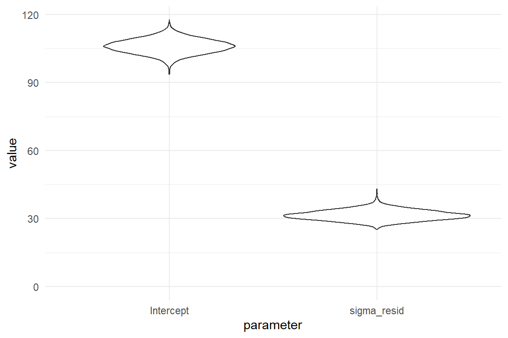
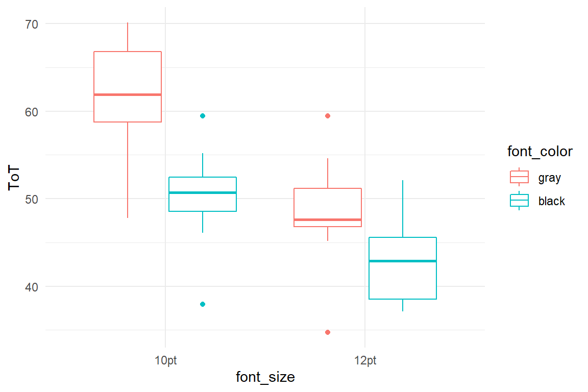
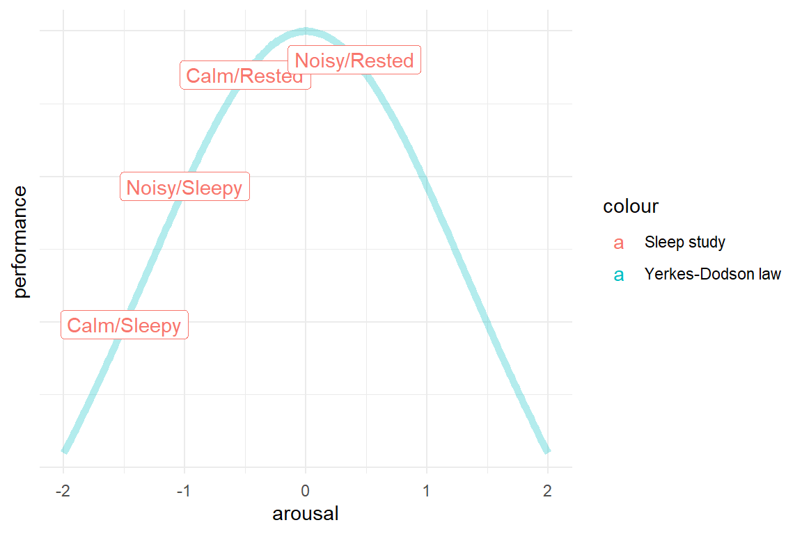

4 Linear models
Linear models answer the question of how one quantitative outcome, say ToT, decreases or increases, when a condition changes.
First, I will introduce the most basic LM. The grand mean model (GMM does not have a single predictors and produces just a single estimate: the grand mean in the population. That can be useful, when there exists an exernal standard to which the design must adhere to. In R, the GMM has a formaula, like this: ToT ~ 1. At the example of the GMM, I describe some basic concepts of Bayesian linear models. On the practical side of things, CLU tables are introduced, which is one major work horse to report our results.
The most obvious application of LM comes next: in linear regression models (LRM), a metric predictor (e.g. age) is linked to the outcome by a linear function, such as: \(f(x) = \beta_0 + \beta_1x\). In R, this is: ToT ~ 1 + age. Underneath is a very practical section that explains how simple transformations can make the results of an estimation more clear. Correlations work in similar situations as LRMs, and it is good to know what the differences and how correlations are linked to linear slope parameters. I end this section with a warning: the assumption of linearity is limited to a straight line and this is violated not by some, but all possible data.
A very common type of research question is how an outcome changes under different conditions. In design research this is always the case, when designs are compared. In R, a factorial model looks just like an LRM: ToT ~ 1 + Design. The rest of the section is dedicated to the techniques that make it possible to put a qualitative variable into a linear equation. Understanding these techniques opens the door to making your own variants that exactly fit your purpose, such as when a factor is ordered and you think of it of as a stairway, rather than treatments. Finally, we will see how factorial models can resolve problems of linearity, like they appear with learning curves.
Once linear regression and factorial models are united, nothing can stop us to combine them into multi-preditor models (MPM). I will introduce all possible combinations: multi-linear, multi-factorial and mixed. However, this section is more intended as a smooth transition models with conditional effects, as these are often more realistic (and interesting).
Conditional models go one step further in that it allows predictors to change there efefct, depending on the other predictors. First I will introduce the practical issues of interpreting conditional effects models. Then we come to some explanations: We will see that conditional effects can adjust for saturation effects, which can severely compromise the linearity assumption. Then we will move on to conditional models which are theoretically more interesting.
And if it weren’t enough about non-linearity in a chapter on linear models. Turns out you can estimate wobbly lines, too, by using polynomials.
The linear model gives you endless possibilities to recombine any number of predictors. But, how good are these models, actually? The last part of this chapter introduces basic techniques of model criticism and model comparison. In model criticism, a single estimated model is under scrunity. The structural part of the model we examine by looking at model fit, where fitted responses are compared to measures. With residual analysis, the pattern of randomness is checked. Model selection deals with comparing models. We will learn about a surprsingly simple technique to compare a set of models by their forecasting accuracy. And finally, I will introduce another p-value. It is not what you think, but it is something you want.
4.1 Quantification at work: grand mean models
Reconsider Jane [#design_research]. She was faced with the problem that potential competitors could challenge the claim “rent a car in 99 seconds” and in consequence drag them to court. More precisely, the question was: “will users on average be able …”, which is nothing but the population mean. A statistical model estimating just that, we call a grand mean model (GMM). The GMM is the most simple of all models, so in a way, we can also think of it as the “grandmother of all models”. Although its is the simplest of all, it is of useful application in design research. For many high risk situations, there often exist minimum standards for performance to which one can compare the population mean, here are a few examples:
- with medical infusion pump the frequency of decimal input error (giving the tenfold or the tenth of the prescribed dose) must be below a bearable level
- the checkout process of an e-commerce website must have a a cancel rate not higher than …
- the timing of a traffic light must be designed to give drivers enough time to hit the brakes.
A GMM predicts the average expected level of performance in the population (\(\beta_0\)). Let’s atsrt with a toy example: When you want to predict the IQ score of a totally random and anonymous individual (from this population), the population average (which is standardized to be 100) is your best guess. However, this best guess is imperfect due to the individual differences. and chances are rather low that 100 is the perfect guess.
# random IQ sample, rounded to whole numbers
set.seed(42)
N <- 1000
D_IQ <- tibble(score = rnorm(N, mean = 100, sd = 15),
IQ = round(score, 0))
# proportion of correct guesses
pi_100 <- sum(D_IQ$IQ == 100)/N
str_c("Proportion of correct guesses (IQ = 100): ", pi_100)## [1] "Proportion of correct guesses (IQ = 100): 0.031"This best guess is imperfect, for a variety reasons:
- People differ a lot in intelligence.
- The IQ measure itself is uncertain. A person could have had a bad day, when doing the test, whereas another person just had more experience with being tested.
- If test items are sampled from a larger set, tests may still differ a tiny bit.
- The person is like the Slum Dog Millionaire, who by pure coincidence encountered precisely those questions, he could answer.
In a later chapters we will investigate on the sources of randomness [REF MLM]. But, like all other models in this chapter, the GMM is a single level linear model. This single level is the population-level and all unexplained effects that make variation are collected in \(\epsilon_i\), the residuals or errors, which are assumed to follow a Gaussian distribution with center zero and standard error \(\sigma_\epsilon\).
Formally, a GMM is written as follows, where \(\mu_i\) is the predicted value of person \(i\) and \(\beta_0\) is the population mean \(\beta_0\), which is referred to as Intercept (see [#CGM]).
\[ \mu_i = \beta_0\\ y_i = \mu_i, + \epsilon_i\\ \epsilon_i \sim \textrm{Gaus}(0, \sigma_\epsilon) \]
This way of writing a linear model only works for Gaussian linear models, as only here, the residuals are symmetric and are adding up to Zero. In chapter [#GLM], we will introduce linear models with different error distributions. For that reason, I will use a slightly different notation throughout:
\[ \mu_i = \beta_0\\ y_i \sim \textrm{Gaus}(\mu_i, \sigma_\epsilon) \] The notable difference between the two notations is that in the first we have just one error distribution. In the second model, every observation actually is taken from its own distribution, located at \(\mu_i\), albeit with a constant variance.
Enough about mathematic formulas for now. In R regression models are specified by a dedicated formula language, which I will develop step-by-step in chapter. This formula language is not very complex, at the same time provides a surprisingly high flexibility for specification of models. The only really odd feature of this formula language is that it represents the intercept \(\beta_0\) with 1. To add to the confusion, the intercept means something different, depending on what type of model is estimated. In GMMs, it is the grand mean, whereas in group-mean comparisons, it is the mean of one reference group [REF CGM] and in linear regression, it is has the usual meaning as in linear equations.
Below we estimate a GMM on (simulated) IQ scores using the stan_glm regression engine. The clu() command extracts all the parameters of a models and reports them with 95% certainty limits:
| parameter | type | fixef | center | lower | upper |
|---|---|---|---|---|---|
| Intercept | fixef | Intercept | 99.6 | 98.7 | 100.5 |
| sigma_resid | disp | NA | 15.1 | 14.4 | 15.8 |
So, when estimating the grand mean model, we estimate the intercept \(\beta_0\) and the standard error \(\sigma\). In R, the analysis of the 99 seconds problem [REF Design Research] unfolds as follows: completion times (ToT) are stored in a data frame, with one observation per row. This data frame is send to the R command stan_glm for estimation, using data = D_1. The formula of the grand mean model is ToT ~ 1. Left of the ~ (tilde) operator is the outcome variable. In design research, this often is a performance measure, such as time-on-task, number-of-errors or self-reported cognitive workload. The right hand side specifies the deterministic part, containing all variables that are used to predict performance.
##
## Model Info:
## function: stan_glm
## family: gaussian [identity]
## formula: ToT ~ 1
## algorithm: sampling
## sample: 4000 (posterior sample size)
## priors: see help('prior_summary')
## observations: 100
## predictors: 1
##
## Estimates:
## mean sd 10% 50% 90%
## (Intercept) 106.0 3.1 101.9 106.1 110.0
## sigma 31.5 2.3 28.7 31.4 34.5
##
## Fit Diagnostics:
## mean sd 10% 50% 90%
## mean_PPD 105.9 4.5 100.2 106.0 111.6
##
## The mean_ppd is the sample average posterior predictive distribution of the outcome variable (for details see help('summary.stanreg')).
##
## MCMC diagnostics
## mcse Rhat n_eff
## (Intercept) 0.1 1.0 2711
## sigma 0.0 1.0 2490
## mean_PPD 0.1 1.0 3452
## log-posterior 0.0 1.0 1687
##
## For each parameter, mcse is Monte Carlo standard error, n_eff is a crude measure of effective sample size, and Rhat is the potential scale reduction factor on split chains (at convergence Rhat=1).Most of the time a researcher does not want to deal with the posterior directly, but desires a brief summary of where the effects lie and what the level of certainty is. Tables of estimates, like the one shown below, serve exactly this purpose. Estimates tables report the central tendency of every estimate, which is the best guess for the true magnitude of an effect. Next to that, the spread of the posterior distribution is summarized as 95% credibility intervals and represent the degree of uncertainty: the less certain an estimate is, the wider is the interval. A 95% credibility interval gives a range of possible values where you can be 95% certain that it contains the true value. A complete center-lower-upper table of estimates is produced by the clu command (bayr package):
| parameter | type | fixef | center | lower | upper |
|---|---|---|---|---|---|
| Intercept | fixef | Intercept | 106.1 | 99.6 | 112.0 |
| sigma_resid | disp | NA | 31.4 | 27.6 | 36.3 |
The clu command being used in this book is from the accompanying R package bayr and produces tables of estimates, showing all parameters in a model, that covers the effects, i.e. coefficients the dispersion or shape of the error distribution, here the standard error. Often, the distribution parameters are of lesser interest and clu comes with sibling commands to only show the (population-level) coefficients:
| parameter | type | fixef | center | lower | upper |
|---|---|---|---|---|---|
| Intercept | fixef | Intercept | 106 | 99.6 | 112 |
Note that regression engines, such as rstanarm, bring their own commands to extract estimates, especially fixef, but these often report the center estimates, only.
## (Intercept)
## 106In order to always use the convenient commands from package bayr, it is necessary to load Bayr after package Rstanarm.
Then, Bayr overwrites the fixef (coef and ranef) commands to produce coefficient tables.
| parameter | type | fixef | center | lower | upper |
|---|---|---|---|---|---|
| Intercept | fixef | Intercept | 106 | 99.6 | 112 |
A GMM is the simplest linear model and as such makes absolute minimal use of knowledge when doing its predictions. The only thing one knows is that test persons come from one and the same population (humans, users, psychology students). Accordingly, predictions are very inaccurate. From the GMM we will depart in two directions. First, in the remainder of this chapter, we will add further predictors to the model, for example age of participants or a experimental conditions. These models will improve our predictive accuracy by using additional knowledge about participants and conditions of testing. In the following chapter on mixed-effects models [REF MLM], the error term is partitioned into its sources.
Reporting a model estimate together with its level of certainty is what makes a statistic inferential (rather than merely descriptive). In Bayesian statistics, the posterior distribution is estimated (usually by means of MCMC sampling) and this distribution carries the full information on certainty. If the posterior is widely spread, an estimate is rather uncertain. You may still bet on values close to the center estimate, but you should keep your bid low. Some authors (or regression engines) express the level of certainty by means of the standard error. However, the standard deviation is a single value and has the disadvantage that a single value does not represent non-symmetric distributions well. A better way is to express certainty as limits, a lower and an upper. The most simple method resembles that of the median by using quantiles.
It is common practice to explain and interpret coefficient tables for the audience. My suggestion of how to report regression results is to simply walk through the table row-by-row and for every parameter make three statements:
- What the parameter says
- a quantitative statement based on the central tendency
- an uncertainty statement based on the CIs
In the present case Sec99 that would be:
The intercept (or \(\beta_0\)) is the population average and is in the region of 106 seconds, which is pretty far from the target of 99 seconds. The certainty is pretty good. At least we can say that the chance of the true mean being 99 seconds or smaller is pretty marginal, as it is not even contained in the 95% CI.
And for \(\sigma\):
The population mean is rather not representative for the observations as the standard error is almost one third of it. There is much deviation from the population mean in the measures.
From here on, we will build up a whole family of models that go beyond the population mean, but have effects. A linear regression model can tell us what effect metric predictors, like age or experience have on user performance. [#LRM] Factorial models we can use for experimental conditions, or when comparing designs.
4.1.1 Likelihood and random term
In formal language, regression models are usually specified by likelihood functions and one or more random terms (exactly one in linear models). The likelihood represents the common, predictable pattern in the data. Formally, the likelihood establishes a link between predicted values \(\mu_i\) and predictors. It is common to call predictors with the Greek letter \(\beta\) (beta). If there is more than one predictor, these are marked with subscripts, starting at zero. The “best guess” is called the expected value and is denoted with \(\mu_i\) (“mju i”). If you just know that the average ToT is 106 seconds and you are asked to guess the performance of the next user arriving in the lab, the reasonable guess is just that, 106 seconds.
\[\mu_i = \beta_0\]
Of course, we would never expect this person to use 106 second, exactly. All observed and imagined observations are more or less clumped around the expected value. The random term specifies our assumptions on the pattern of randomness. It is given as distributions (note the plural), denoted by the \(\sim\) (tilde) operator, which reads as: “is distributed”. In the case of linear models, the assumed distribution is always the Normal or Gaussian distribution. Gaussian distributions have a characteristic bell curve and depend on two parameters: the mean \(\mu\) as the central measure and the standard deviation \(\sigma\) giving the spread.
\[y_i \sim \textrm{Gaus}(\mu_i, \sigma_{\epsilon})\]
The random term specifies how all unknown sources of variation take effect on the measures, and these are manifold. Randomness can arise due to all kinds of individual differences, situational conditions, and, last but not least, measurement errors. The Gaussian distribution sometimes is a good approximation for randomness and linear models are routinely used in research. In several classic statistics books, the following formula is used to describe the GMM (and likewise more complex linear models):
\[ y_i = \mu_i + \epsilon_i\\ \mu_i = \beta_0\\ \epsilon_i \sim \textrm{Norm}(0, \sigma_\epsilon) \]
First, it is to say, that these two formulas are mathematically equivalent. The primary difference to our formula is that the residuals \(\epsilon_i\), are given separately. The pattern of residuals is then specified as a single Gaussian distribution. Residual distributions are a highly useful concept in modelling, as they can be used to check a given model. Then the the classic formula is more intuitive. The reason for separating the model into likelihood and random term is that it works in more cases. When turning to Generalized Linear Models (GLM) in chapter ??, we will use other patterns of randomness, that are no longer additive, like in \(\mu_i + \epsilon_i\). As I consider the use of GLMs an element of professional statistical practice, I use the general formula throughout.
4.1.2 Working with the posterior distribution
Coefficient tables are the standard way to report regression models. They contain all effects (or a selection of interest) in rows. For every parameter, the central tendency (center, magnitude, location) is given, and a statement of uncertainty, by convention 95% credibility intervals (CI).
The object M_1 is the model object created by stan_glm. When you call summary you get complex listings that represent different aspects of the estimated model. These aspects and more are saved inside the object in a hierarchy of lists. The central result of the estimation is the posterior distribution (HPD). With package Rstanarm, the posterior distribution is extracted as follows:
## Classes 'tbl_df', 'tbl' and 'data.frame': 4000 obs. of 2 variables:
## $ Intercept: num 100 103 105 107 105 ...
## $ sigma : num 35.7 33 33.1 29.9 31.8 ...The resulting data frame is a matrix, where each of the 4000 rows is one coordinate the MCMC walk has visited in a two-dimensional parameter space [REF MCMC]. For the purpose of reporting parameter estimates, we could create a coefficient table like follows:
P_1_wide %>%
summarize(center_Intercept = median(Intercept),
center_sigma = median(sigma),
lower_Intercept = quantile(Intercept, .025),
lower_sigma = quantile(sigma, .025),
upper_Intercept = quantile(Intercept, .975),
upper_sigma = quantile(sigma, .975))| center_Intercept | center_sigma | lower_Intercept | lower_sigma | upper_Intercept | upper_sigma |
|---|---|---|---|---|---|
| 106 | 31.4 | 99.6 | 27.6 | 112 | 36.3 |
As can be seen, creating coefficient tables from wide posterior objects is awful and repetitive, even when there are just two parameters (some models contain hundreds of parameters). Additional effort would be needed to get a well structured table. The package Bayr can extract posterior distributions, too, but produces a long format. This works approximately like can be seen in the following code, which employs tidyr::gather to make the wide Rstanarm posterior long.
P_1_long <- P_1_wide %>%
tidyr::gather(key = parameter)
P_1_long %>%
sample_n(10) %>%
arrange(parameter)| parameter | value |
|---|---|
| Intercept | 99.1 |
| Intercept | 109.6 |
| Intercept | 104.7 |
| sigma | 32.3 |
| sigma | 32.9 |
| sigma | 34.0 |
| sigma | 34.4 |
| sigma | 30.4 |
| sigma | 31.8 |
| sigma | 33.1 |
With long posterior objects, summarizing over the parameters is efficient and straight-forward, in other words: it is tidy.
P_1_long %>%
group_by(parameter) %>%
summarize(center = median(value),
lower = quantile(value, .025),
upper = quantile(value, .975))| parameter | center | lower | upper |
|---|---|---|---|
| Intercept | 106.1 | 99.6 | 112.0 |
| sigma | 31.4 | 27.6 | 36.3 |
With the Bayr package, the posterior command produces such a long posterior object:
** tbl_post: 4000 samples in 1 chains
| model | parameter | type | fixef | entities |
|---|---|---|---|---|
| M_1 | Intercept | fixef | Intercept | 1 |
When called, the posterior object identifies itself by telling the number of MCMC samples, and the estimates contained in the model, grouped by type of parameter. In the case here, there is just one coefficient, the intercept and one dispersion parameter, the standard deviation of residuals The following gives a glance on the real structure of the long posterior object. Most essential are the identification of the iteration (and chain), the parameter name and the value. However, there is a lot more information stored along side, much of which we will only use in later chapters.
P_1 %>%
as_tibble() %>%
filter(!as.logical(iter %% 500)) ## <-- modulo division selects every 500th iteration| model | chain | iter | order | parameter | type | nonlin | fixef | re_factor | re_entity | value |
|---|---|---|---|---|---|---|---|---|---|---|
| M_1 | NA | 500 | 2 | sigma_resid | disp | NA | NA | NA | NA | 30.1 |
| M_1 | NA | 500 | 1 | Intercept | fixef | NA | Intercept | NA | NA | 103.3 |
| M_1 | NA | 1000 | 2 | sigma_resid | disp | NA | NA | NA | NA | 32.4 |
| M_1 | NA | 1000 | 1 | Intercept | fixef | NA | Intercept | NA | NA | 107.7 |
| M_1 | NA | 1500 | 2 | sigma_resid | disp | NA | NA | NA | NA | 27.2 |
| M_1 | NA | 1500 | 1 | Intercept | fixef | NA | Intercept | NA | NA | 103.7 |
| M_1 | NA | 2000 | 2 | sigma_resid | disp | NA | NA | NA | NA | 27.4 |
| M_1 | NA | 2000 | 1 | Intercept | fixef | NA | Intercept | NA | NA | 104.1 |
| M_1 | NA | 2500 | 2 | sigma_resid | disp | NA | NA | NA | NA | 31.4 |
| M_1 | NA | 2500 | 1 | Intercept | fixef | NA | Intercept | NA | NA | 97.8 |
| M_1 | NA | 3000 | 2 | sigma_resid | disp | NA | NA | NA | NA | 32.4 |
| M_1 | NA | 3000 | 1 | Intercept | fixef | NA | Intercept | NA | NA | 108.7 |
| M_1 | NA | 3500 | 2 | sigma_resid | disp | NA | NA | NA | NA | 31.6 |
| M_1 | NA | 3500 | 1 | Intercept | fixef | NA | Intercept | NA | NA | 108.2 |
| M_1 | NA | 4000 | 2 | sigma_resid | disp | NA | NA | NA | NA | 30.8 |
| M_1 | NA | 4000 | 1 | Intercept | fixef | NA | Intercept | NA | NA | 107.2 |
Note how the two parameters Intercept and sigma are assigned different parameter types: Effects and Dispersion. That is a generally useful classification made by the command bayr::posterior. It allows us to filter by type of parameter and produce CLUs:
| model | parameter | type | fixef | center | lower | upper |
|---|---|---|---|---|---|---|
| M_1 | Intercept | fixef | Intercept | 106 | 99.6 | 112 |
That is almost precisely how the bayr::fixef command is implemented. Note that coef and fixef can be called on the rstanarm model object, directly, which produces the long posterior in the background.
| parameter | type | fixef | center | lower | upper |
|---|---|---|---|---|---|
| Intercept | fixef | Intercept | 106 | 99.6 | 112 |
4.1.3 Center and interval estimates
The authors of Bayesian books and the various regression engines have different opinions on what to use as center statistic and credibility limits in a coefficient table. The best known option are: the mean, the median and the mode.
T_1 <-
P_1 %>%
group_by(parameter) %>%
summarize(mean = mean(value),
median = median(value),
mode = mascutils::mode(value),
lower = quantile(value, .025),
upper = quantile(value, .975))
T_1| parameter | mean | median | mode | lower | upper |
|---|---|---|---|---|---|
| Intercept | 106.0 | 106.1 | 106 | 99.6 | 112.0 |
| sigma_resid | 31.5 | 31.4 | 31 | 27.6 | 36.3 |
We observe that for the Intercept it barely matters which center statistic we use, but there are differences for the standard error. We investigate this further by producing a plot with the marginal posterior distributions of \(\mu\) and \(\sigma\) with mean, median and mode.
| parameter | center | value |
|---|---|---|
| Intercept | mean | 106.0 |
| sigma_resid | mean | 31.5 |
| Intercept | median | 106.1 |
| sigma_resid | median | 31.4 |
| Intercept | mode | 106.1 |
| sigma_resid | mode | 31.0 |
| Intercept | lower | 99.6 |
| sigma_resid | lower | 27.6 |
| Intercept | upper | 112.0 |
| sigma_resid | upper | 36.3 |
G_1 <- P_1 %>%
ggplot(aes(x = value)) +
facet_wrap(~parameter, scales = "free_x") +
geom_density(fill = 1) +
geom_vline(aes(xintercept = value, col = center), data = T_1_long)
G_1
This example demonstrates how the long format posterior works together with the GGplot graphics engine. A density plot very accurately renders how certainty is distributed over the range of a parameter. In order to produce vertical lines for point estimate and limits, we first make the summary table long, with one value per row. This is not how we would usually like to read it, but it is very efficient for adding to the plot.
When inspecting the two distributions, it appears that the distribution of Intercept is completely symmetric. For the standard error, in contrast, we note a slight left skewness. This is rather typical for dispersion parameters, as these have a lower boundary. The closer the distribution sits to the boundary, the steeper becomes the left tail.
A disadvantage of the mean is that it may change under monotonic transformations. A monotonic transformations is a recoding of a variable \(x_1\) into a new variable \(x_2\) by a transformation function \(\phi\) (\(phi\)) such that the order of values stays untouched. Examples of monotonic functions are the logarithm (\(x_2 = \log(x_1)\)), the exponential function (\(x_2 = \exp(x_1)\)), or simply \(x_2 = x_1 + 1\). A counter example is the quadratic function \(x_2 = x_1^2\). In data analysis monotonous transformations are used a lot. Especially Generalized Linear Models make use of monotonous link functions to establish linearity ??. Furthermore, the mean can also be highly influenced by outliers.
The mode of a distribution is its point of highest density. It is invariant under monotonic transformations. It also has a rather intuitive meaning as the most likely value for the true parameter. Next to that, the mode is compatible with classic maximum likelihood estimation. When a Bayesian takes a pass on any prior information, the posterior mode should precisely match the results of a classic regression engine (e.g. glm). The main disadvantage of the mode is that it has to be estimated by one of several heuristic algorithms. These add some computing time and may fail when the posterior distribution is bi-modal. However, when that happens, you probably have a more deeply rooted problem, than just deciding on a suitable summary statistic.
The median of a distribution marks the point where half the values are below and the other half are equal or above. Technically, the median is just the 50% quantile of the distribution. The median is extremely easy and reliable to compute, and it shares the invariance of monotonous transformations. This is easy to conceive: The median is computed by ordering all values in a row and then picking the value that is exactly in the middle. Obviously, this value only changes if the order changes, i.e. a non-monotonous function was applied. For these advantages, I prefer using the median as center estimates. Researchers who desire a different center estimate can easily write their own clu.
In this book, 2.5% and 97.5% certainty quantiles are routinely used to form 95% credibility intervals (CI). There is nothing special about these intervals, they are just conventions, Again, another method exists to obtain CIs. Some authors prefer to report the highest posterior interval (HPD), which is the narrowest interval that contains 95% of the probability mass. While this is intriguing to some extent, HPDs are not invariant to monotonic transformations, either.
So, the parameter extraction commands used here give the median and the 2.5% and 97.5% limits. The three parameters have in common that they are quantiles, which are handled by Rs quantile command. To demystify the clu, here is how you can make a basic coefficient table yourself:
P_1 %>%
group_by(parameter) %>%
summarize(center = quantile(value, 0.5),
lower = quantile(value, 0.025),
upper = quantile(value, 0.975)) %>%
kable()| parameter | center | lower | upper |
|---|---|---|---|
| Intercept | 106.1 | 99.6 | 112.0 |
| sigma_resid | 31.4 | 27.6 | 36.3 |
Note that we get CIs for the dispersion parameter \(\sigma\), too. Many classic analyses call \(\sigma\) are nuisance parameter and ignore it, or they blame high variation between observations for not reaching “statistical significance” for the parameter of interest. Furthermore, classic regression engines don’t yield any measures of certainty on dispersion parameters. I believe that understanding the amount of variation is often crucial for design research and several of the examples that follow try to build this case. This is why we should be glad that Bayesian engines report uncertainty on all parameters involved.
4.1.4 Do the random walk: Markov Chain Monte Carlo sampling
So far, we have seen how linear models are specified and how parameters are interpreted from standard coefficient tables. While it is convenient to have a standard procedure it may be useful to understand how these estimates came into being. In Bayesian estimation, an approximation of the posterior distribution (PD) is the result of running the engine and is the central point of departure for creating output, such as coefficient tables. PD assigns a degree of certainty for every possible combination of parameter values. In the current case, you can ask the PD, where and how certain the population mean and the residual standard error are, but you can also ask: How certain are we that the population mean is smaller than 99 seconds and \(\sigma\) is smaller than 10?
In a perfect world, we would know the analytic formula of the posterior and derive statements from it. In most non-trivial models, though, there is no such formula one can work with. Instead, what the regression engine does is to approximate the PD by a random-walk algorithm called Markov-Chain Monte Carlo sampling (MCMC).
The stan_glm command returns a large object that stores, among others, the full random walk. This random walk represents the posterior distribution almost directly. The following code extracts the posterior distribution from the regression object and prints it. When calling the new object (class: tbl_post) directly, it provides a compact summary of all variables in the model, in this case the intercept and the residual standard error.
** tbl_post: 4000 samples in 1 chains
| model | parameter | type | fixef | entities |
|---|---|---|---|---|
| M_1 | Intercept | fixef | Intercept | 1 |
The 99 second GMM has two parameters and therefore the posterior distribution has three dimensions: the parameter dimensions \(\beta_0\), \(\sigma\) and the probability density. Three dimensional plots are difficult to put on a surface, but for somewhat regular patterns, a density plot with contour lines does a sufficient job:
P_1 %>%
select(chain, iter, parameter, value) %>%
spread(parameter, value) %>%
ggplot(aes(x = Intercept, y = sigma_resid, fill = ..level..)) +
stat_density_2d(geom = "polygon") +
xlim(95, 115) + ylim(25, 40) +
scale_fill_continuous(name="relative frequency")
Let’s see how this PD “landscape” actually emerged from the random walk. In the current case, the parameter space is two-dimensional, as we have \(\mu\) and \(\sigma\). The MCMC procedure starts at a deliberate point in parameter space. At every iteration, the MCMC algorithm attempts a probabilistic jump to another location in parameter space and stores the coordinates. This jump is called probabilistic for two reasons: first, the new coordinates are selected by a random number generator and second, it is either carried out, or not, and that is probabilistic, too. If the new target is in a highly likely region, it is carried out with a higher chance. This sounds circular, but it provenly works. More specifically, the MCMC sampling approach rests on a general proof, that the emerging frequency distribution converges towards the true posterior distribution. That is called ergodicity and it means we can take the relative frequencies of jumps into a certain area of parameter space as an approximation for our degree of belief that the true parameter value is within this region.
The regression object stores the MCMC results as a long series of positions in parameter space. For any range of interest, it is the relative frequency of visits that represents its certainty. The first 50 jumps of the MCMC random walk are shown in @ref(99_seconds_random_walk)`. Apparently, the random walk is not fully random, as the point cloud is more dense in the center area. This is where the more probable parameter values lie. One can clearly see how the MCMC algorithm jumps to more likely areas more frequently. These areas become more dense and, finally, the cloud of visits will approach the contour density plot above.
G_random_walk <-
P_1 %>%
filter(iter <= 50) %>%
select(iter, parameter, value) %>%
spread(parameter, value) %>%
ggplot(aes(x = Intercept, y = sigma_resid, label = iter)) +
geom_text() +
geom_path(alpha = .3) +
ylab("residual sd") +
xlab("intercept mu") +
xlim(95, 115) + ylim(25, 40)
G_random_walk
The more complex regression models grow, the more dimensions the PD gets. The linear regression model in the next chapter has three parameter dimensions, which is difficult to visualize. Multi-level models [#MLM] have hundreds of parameters, which is impossible to intellectually grasp at once. Therefore, it is common to use the marginal posterior distributions (MPD), which give the density of one coefficient at time. My preferred geometry for plotting many MPDs is the violin plot, which packs a bunch of densities and therefore can be used when models of many more dimensions.

In our example, in @ref(99_seconds_post) we can spot that the most likely value for average time-on-task is \(105.99\). Both distributions have a certain spread. With a wider PD, far-off values have been visited by the MCMC chain more frequently. The probability mass is more evenly distributed and there is less certainty for the parameter to fall in the central region. In the current case, a risk averse decision maker would maybe take the credibility interval as “reasonably certain”.
Andrew and Jane expect some scepticism from the marketing people, and some lack in statistical skills, too. What would be the most comprehensible single number to report? As critical decisions are involved, it seems plausible to report the risk to err: how certain are they that the true value is more than 99 seconds. We inspect the histograms. The MPD of the intercept indicates that the average time-on-task is rather unlikely in the range of 99 seconds or better. But what is the precise probability to err for the 99 seconds statement? The above summary with coef() does not accurately answer the question. The CI gives lower and upper limits for a range of 95% certainty in total. What is needed is the certainty of \(\mu \geq 99\). Specific questions deserve precise answers. And once we have understood the MCMC chain as a frequency distribution, the answer is easy: we simply count how many visited values are larger than 99. In R, the quantile function handles the job:
T_certainty <-
P_1 %>%
filter(parameter == "Intercept") %>%
summarize(certainty_99s = mean(value >= 99),
certainty_111s = mean(value >= 111))
kable(T_certainty)| certainty_99s | certainty_111s |
|---|---|
| 0.984 | 0.054 |
It turns out that the certainty for average time-on-task above the 99 is an overwhelming 0.984. The alternative claim, that average completion time is better than 111 seconds, has a rather moderate risk to err (0.054).
4.2 Walk the line: linear regression
In the previous section we have introduced the most basic of all regression models: the grand mean model. It assigns rather coarse predictions, without any real predictors. Routinely, design researchers desire to predict performance based on metric variables, such as:
- previous experience
- age
- font size
- intelligence level and other innate abilities
- level of self efficiacy, neuroticism or other traits
- number of social media contacts
To carry out such a research question, the variable of interest needs to be measured next to the outcome variable. And, the variable must vary. You cannot examine the effects of age or font size on reading performance, when all participants are of same age and you test only one size. Then, for specifying the model, the researcher has to come up with an expectation of how the two are related. Theoretically, that can be any mathematical function, but practically, a linear function is often presumed. The following plot shows a variety of linear relations between two variables \(x\) and \(y\).
mascutils::expand_grid(intercept = c(0, 1, 2),
slope = c(-.5, 0, 1.5),
x = -3:3) %>%
arrange(x) %>%
mutate(y = intercept + x * slope,
slope = as.factor(slope)) %>%
ggplot(aes(x = x, y = y, color = slope)) +
geom_line() +
facet_grid(~intercept)
A linear function is a straight line, which is specified by two parameters: intercept \(\beta_0\) and slope \(\beta_1\):
\[f(x_1) = \beta_0 + \beta_1x_{1i}\]
The intercept is “the point where a function graph crosses the x-axis”, or more formally:
\[f(x_1 = 0) = \beta_0\]
The second parameter, \(\beta_1\) is called the slope. The slope determines the steepness of the line. When the slope is \(.5\), the line will rise up by .5 on Y, when moving one step to the right on X.
\[f(x_1 + 1) = \beta_0 + \beta_1x_{1i} + \beta_1\]
There is also the possibility that the slope is zero. In such a case, the predictor has no effect and can be left out. Setting \(\beta_1 = 0\) produces a horizontal line, with \(y_i\) being constant over the whole range. This shows that the GMM is a special case of LRMs, where the slope is fixed to zero, hence \(\mu_i = \beta_0\).
Linear regression gives us the opportunity to discover how ToT can be predicted by age (\(x_1\)) in the BrowsingAB case. In this hypothetical experiment, two designs A and B are compared, but we ignore this for now. Instead we ask: are older people slower when using the internet? Or: is there a linear relationship between age and ToT? The structural and random terms of the LRM are:
\[\mu_i = \beta_0 + \beta_1x_{1i}\] \[y_i \sim \textrm{Gaus}(\mu_i, \sigma)\]
This literally means: with every year of age, ToT increases by \(\beta_1\) seconds. Before we run a linear regression with stan_glm, we visually explore the association between age and ToT using a scatter plot. The blue line in the graph is a so called a smoother, more specifically a LOESS. A smoother is an estimated line, just as linear function. But, it is way more flexible. Where the linear function is a straight stick fixed at a pivotal point, LOESS is more like a pipe cleaner. here, LOESS shows a more detailed picture of the relation between age and ToT. There is a rise between 20 and 40, followed by a stable plateau, and another rise starting at 60. Actually, that does not look like a straight line, but at least there is steady upwards trend.

In fact, the BrowsingAB simulation contains what one could call a psychological model. The effect of age is partly due to farsightedness of participants (making them slower at reading), which more or less suddenly kicks in at a certain range of age. Still, we make do with a rough linear approximation. To estimate the model, we use the stan_glm command in much the same way as before, but add the predictor age. The command will internally check the data type of your variable, which is metric in this case. Therefore, it is treated as a metric predictor (sometimes also called covariate) .
| parameter | fixef | center | lower | upper |
|---|---|---|---|---|
| Intercept | Intercept | 164.217 | 144.057 | 184.13 |
| age | age | 0.637 | 0.258 | 1.03 |
Is age associated with ToT? The coefficient table tells us that with every year of age, users get \(0.64\) seconds slower, which is considerable. It also tells us that the predicted performance at age = 0 is \(164.22\).
4.2.1 Transforming measures
In the above model, the intercept represents the predicted ToT at age == 0, of a newborn. We would never seriously put that forward in a stakeholder presentation, trying to prove that babies benefit from the redesign of a public website, would we? The prediction is bizarre because we intuitively understand that there is a discontinuity up the road, which is the moment where a teenager starts using public websites. We also realize that over the whole life span of a typical web user, say 12 years to 90 years, age actually is a proxy variable for two distinct processes: the rapid build-up of intellectual skills from childhood to young adulthood and the slow decline of cognitive performance, which starts approximately, when the first of us get age-related far-sightedness. Generally, with linear models, one should avoid making statements about a range that has not been observed. Linearity, as we will see in [REF: debunking], always is an approximation for a process that truly is non-linear.
Placing the intercept where there is no data has another consequence: the estimate is rather uncertain, with a wide 95% CI, \(164.22 [144.06, 184.13]_{CI95}\). As a metaphor, think of the data as a hand that holds the a stick, the regression line and tries to push a light switch. The longer the stick, the more difficult is becomes to hit the target.
4.2.1.1 Shifting an centering
Shifting the predictor is a pragmatic solution to the problem: “Shifting” means that the age predictor is moved to the right or the left, such that point zero is in a region populated with observations. In this case, two options seem to make sense: either, the intercept is in the region of youngest participants, or it is the sample average, which is then called centering. To shift a variable, just subtract the amount of units (years) where you want the intercept to be. The following code produces a shift of -20 and a centering on the original variable age:
BAB1 <-
BAB1 %>%
mutate(age_shft = age - 20,
age_cntr = age - mean(age))
BAB1 %>%
tidyr::gather("predictor", "age", starts_with("age")) %>%
ggplot(aes(x = age, y = ToT)) +
facet_grid(predictor~.) +
geom_point() +
geom_smooth(se = F, method = "lm", fullrange = T)
By shifting the age variable, the whole data cloud is moved to the left. To see what happens on the inferential level, we repeat the LRM estimation with the two shifted variables:
M_age_shft <-
stan_glm(ToT ~ 1 + age_shft, data = BAB1)
M_age_cntr <-
stan_glm(ToT ~ 1 + age_cntr, data = BAB1)We combine the posterior distributions into one multi-model posterior and read the multi-model coefficient table:
P_age <-
bind_rows(posterior(M_age),
posterior(M_age_shft),
posterior(M_age_cntr))
T_age <- coef(P_age)
T_age| model | parameter | fixef | center | lower | upper |
|---|---|---|---|---|---|
| M_age | Intercept | Intercept | 164.217 | 144.057 | 184.13 |
| M_age | age | age | 0.637 | 0.258 | 1.03 |
| M_age_cntr | Intercept | Intercept | 195.825 | 189.651 | 201.91 |
| M_age_cntr | age_cntr | age_cntr | 0.649 | 0.246 | 1.05 |
| M_age_shft | Intercept | Intercept | 176.883 | 163.803 | 190.13 |
| M_age_shft | age_shft | age_shft | 0.641 | 0.250 | 1.02 |
## [1] "BAB1"When comparing the regression results the shifted intercepts have moved to higher values, as expected. Surprisingly, the simple shift is not exactly 20 years. This is due to the high uncertainty of the first model, as well as the relation not being exactly linear (see Figure XY). The shifted age predictor has a slightly better uncertainty, but not by much. This is, because the region around the lowest age is only scarcely populated with data. Centering, on the other hand, results in a highly certain estimate, due to the dence data. The slope parameter, however, practically does not change, neither in magnitude nor in certainty.
Shift (and centering) move the scale of measurement and make sure that the intercept falls close (or within) the cluster of observations. Shifting does not change the unit size, which is still years. For most metric predictors that would also not be desireable, as the unit of measurement is natural and intuitive.
4.2.1.2 Rescaling
Most rating scales are not natural units of measure. Most of the time it is not meaningful to say: “the user experience rating improved by one”. The problem has two roots, as I will illustrate by the following four rating scale items:
This product is …
- difficult to use
|1 ... X ... 3 ... 4 ... 5 ... 6 ... 7|easy to use - from hell
|-----X----------------------| (10cm)heavenly - neutral
|1 ... X ... 3 ... 4|uncanny
If you would employ these three scales to assess one and the same product, the data could look like this:
set.seed(42)
Raw_ratings <-
tibble(Part = 1:100,
difficult_easy = mascutils::rrating_scale(100, 0, .5,
ends = c(1,7)),
heavenly_hell = mascutils::rrating_scale(100, 0, .2,
ends = c(0,10), bin = F),
neutral_uncanny = mascutils::rrating_scale(100, -.5, .5,
ends = c(1,5)))
head(Raw_ratings)| Part | difficult_easy | heavenly_hell | neutral_uncanny |
|---|---|---|---|
| 1 | 5 | 5.60 | 1 |
| 2 | 4 | 5.52 | 3 |
| 3 | 4 | 4.50 | 3 |
| 4 | 5 | 5.91 | 4 |
| 5 | 4 | 4.67 | 2 |
| 6 | 4 | 5.05 | 2 |
In the following, we are comparing the results of these three items. However, they came in the wide format, as you would use to create a correlation table. For a tidy analysis, we first make the data set long. Ratings are now classified by the item they came from. We can produce a grid histogram.
D_ratings <-
Raw_ratings %>%
gather(key = Item, value = rating, -Part) %>%
mascutils:::as_tbl_obs()
D_ratings
The first problem is that rating scales have been designed with different end points. The first step when using different rating scales is shifting the left-end point to zero and dividing by the range of the measure (upper - lower boundary). That brings all items down to the range between zero and one. Note how the following tidy code joins in a table that holds the properties of our items.
D_Items <- tribble(~Item, ~lower, ~upper,
"difficult_easy", 1, 7,
"heavenly_hell", 0, 10,
"neutral_uncanny", 1, 5)
D_ratings <-
D_ratings %>%
left_join(D_Items, by = "Item") %>%
mutate(scaled = (rating - lower)/(upper - lower))
D_ratings %>%
ggplot(aes(x = scaled)) +
facet_grid(Item ~ .) +
geom_histogram(bins = 100) +
xlim(0,1)
This partly corrects the horizontal shift between scales. However, the ratings on the third item still are shifted relative to the other two. The reason is that the first two items have the neutral zone right in the center, whereas the third item is neutraul at its left-end point. The second inconsistency is that the second item uses rather extreme anchors (end point labels), which produces a tight accumulation in the center of the range (with a lot of polite people in the sample, at least). The three scales have been rescaled by their nominal range, but they differ in their observed variance.
z-transformation rescales a measure by its observed variance. A set of measures is z-transformed by centering it and scaling it by its own standard deviation.
D_ratings %>%
group_by(Item) %>%
mutate(zrating = (rating - mean(rating))/sd(rating)) %>%
# mascutils::z_score(rating) %>%
ggplot(aes(x = rating)) +
facet_grid(Item ~ .) +
geom_histogram(bins = 100)
By z-transformation, the three scales now exhibit the same mean location and the same dispersion. This could be used to combine them into one general score. Note however, that information is lost by this process, namely the differences in location or dispersion. If the research question is highly detailed, such as “Is the design consistently rated low on uncanniness?”, this can no longer be answered from the z-transformed variable.
Finally, sometimes researchers use logarithmic transformation of outcome measures to reduce what they perceive as pathologies of tha data. In particular, many outcome variables do not follow a Normal distribution, as the random term of linear models assumes, but are left-skewed. Log-transformation often mitigates such problems. However, as we will see in chapter [REF GLM], linear models can be estimated gracefully with a random component that precisely matches the data as it comes. The following time-on-task data is from the IPump study, where nurses have tested two infusion pump interfaces:
D_pumps %>%
mutate(logToT = log(ToT)) %>%
select(Design, ToT, logToT) %>%
gather(key = Measure, value = value, -Design) %>%
ggplot(aes(x = value, color = Design)) +
facet_wrap(Measure~., scale = "free") +
geom_density()
Frequently, it is count measures and temporal measures to exhibit non-symmetric error distributions. By log transformation one often arrives at a reasonably Gaussian distributed error. However, the natural unit of te measure (seconds) gets lost by the transformation, making it very difficult to report the results in a quantitative manner.
4.2.2 Correlations
LRM render the quantitative relationship between two metric variables. Another commonly known statistic that seems to do something similar is Pearson’s correlation statistic \(r\) (@(#associations)). In the following, we will see that a tight connection between correlation and linear coefficients exists, albeit both having their own advantages. For a demonstration, we reproduce the steps on a simulated data set where X and Y are linearly linked:

Recall, that \(r\) is covariance standardized for dispersion, not unsimilar to z-transformation [REF transformations] and that a covariance is the mean squared deviance from the population mean. This is how the correlation is decontaminated from the idiosyncracies of the involved measures, their location and dispersion. Similarly, the slope parameter in a LRM is a measure of association, too. It is agnostic of the overall location of measures since this is captured by the intercept. However, dispersion remains intact. This ensures that the slope and the intercept together retain information about location, dispersion and association of data, and we can ultimately make predictions. Still, there is a tight relationship between Pearson’s \(r\) and a slope coefficient \(\beta_1\), namely:
\[ r = \beta_1 \frac{sd_X}{sd_Y} \]
For the sole purpose of demonstration, we here resort to the built-in non-Bayesian command lm for doing the regression.
## x
## 0.66The clue with Pearson’s \(r\) is that it normalized the slope coefficient by the variation found in the sample. This resembles z-transformation as was introduced in ??. In fact, when both, predictor and outcome, are z-transformed before estimation, the coefficient equals Pearson’s \(r\) exactly:
M_z <-
D_cor %>%
mutate(x_z = (x - mean(x))/sd(x),
y_z = (y - mean(y))/sd(y)) %>%
lm(y_z ~ x_z, .)
stats::coef(M_z)[2]## x_z
## 0.66In regression modelling the use of coefficients allows for predictions made in the original units of measurement. Correlations, in contrast, are unit-less. Still, correlation coefficients play an imortant role in exploratory data analysis (but also in multilevel models, see @(re_correlations) for the following reasons:
- Correlations between predictors and responses are a quick and dirty assessment of the expected associations.
- Correlations between multiple response modalities (e.g., ToT and number of errors) indicate to what extent these responses can be considered exchangeable.
- Correlations between predictors should be checked upfront to avoid problems arising from so-called collinearity [REF colinearity].
The following table shows the correlations between measures in the MMN study, where we tested the association between verbal and spatial working memory capacity (Ospan and Corsi tests and performance in a search task on a website (clicks and time).
| rowname | Corsi | Ospan.A | Ospan.B | time | clicks |
|---|---|---|---|---|---|
| Corsi | NA | 0.177 | 0.116 | 0.068 | 0.137 |
| Ospan.A | 0.177 | NA | 0.876 | 0.053 | 0.111 |
| Ospan.B | 0.116 | 0.876 | NA | 0.060 | 0.119 |
| time | 0.068 | 0.053 | 0.060 | NA | 0.838 |
| clicks | 0.137 | 0.111 | 0.119 | 0.838 | NA |
These correlations give an approximate picture of associations in the data:
- Working memory capacity is barely related to performance.
- There is a strong correlations between the performance measures.
- There is a strong correlation between the two predictors Ospan.A and Ospan.B.
Linear coefficients and correlations both represent associations between measures. Coefficients preserve units of measuremnent, allowing us to make meaningful quantitative statements. Correlations are re-scaled by the observed dispersion of measures in the sample, making them unit-less. The advantage is that larger sets of associations can be screened at once and compared easily.
4.2.3 Endlessly linear
On a deeper level the bizarre age = 0 prediction is an example of a principle , that will re-occur several times throughout this book.
In this universe everything is finite.
A well understood fact about LRM is that they allow us to fit a straight line to data. A lesser regarded consequence from the mathematical underpinnings of such models is that this line extends infinitely in both directions. To fulfill this assumption, the outcome variable needs to have an infinite range, too, \(y_i \in [-\infty; \infty]\) (unless the slope is zero). Every scientifically trained person and many lay people know, that even elementary magnitudes in physics are finite: all speeds are limited to \(\approx 300.000 km/s\), the speed of light, and temperature has a lower limit of \(-276°C\) (or \(0°K\)). If there can neither be endless acceleration nor cold, it would be daring to assume any psychological effect to be infinite in both directions.
The endlessly linear assumption (ELA) is a central piece of all LRMs. From a formal perspective, the ELA is always violated in a universe like ours. So, should we never ever use a linear model and move on to non-linear models right away? Pragmatically, the LRM often is a reasonably effective approximation. From figure [#G_eda_1] we have seen that the increase of time-on-task by age is not strictly linear, but follows a more complex curved pattern. This pattern might be of interest to someone studying the psychological causes of the decline in performance. For the applied design researcher it probably suffices to summarize the monotonous relationship by one slope coefficient. In 4.4.1 we will estimate the age effects for designs A and B separately, which lets us compare fairness towards older people.
As has been said, theorists may desire a more detailed picture and see disruptions of linearity as indicators for interesting psychological processes. An uncanny example of theoretical work will be given when I introduce polynomial regression [#PRM]. For the rest of us, linear regression is a pragmatic choice, as long as:
- the pattern is monotonically increasing
- any predictions stay in the observed range and avoid the boundary regions, or beyond.
4.3 Factorial Models
In the previous section we have seen how linear models are fitting the association between a metric predictor X and an outcome variable Y to a straight line with a slope and a point of intercept. Such a model creates a prediction of Y, given you know the value of measure X.
However, in many research situations, the predictor variable carries not a measure, but a group label. Factor variables assign observations to one of a set of predefined groups, such as the following variables do in the BrowsingAB case:
attach(BrowsingAB)
BAB5 %>%
select(Part, Task, Design, Gender, Education, Far_sighted) %>%
sample_n(8)Two of the variables, Gender and Education clearly carry a group membership of the participants. That is a natural way to think of people groups, such as male of female, or which school type they went to. But, models are inert to anthropocentrism and can divide everything into groups. Most generally, it is always the observations, i.e. the rows in a (tidy) data table, which are divided into groups. Half of the observations habe been made with design A, the rest with B.
The data also identifies the participant and the task for every observation. Although do we see numbers on participants, these are factors, not metric variables. If one had used initials of participants, that would not make the slightest difference of what this variable tells. It also does not matter, whether the researcher has actually created the levels, for example by assigning participants to one of two deisgn conditions, or has just observed it, such as demographic variables.
Factorial models are frequently used in experiments, where the effect a certain condition on performance is measured. In design research, that is the case when comparing two (or more) designs and the basic model for that, the comparison of group means model, will be introduced, first [#CGM], with more details on the inner workings and variations in the two sections that follow [#dummy_variables #treatment contrasts]. A CGM requires that one can think of one of the groups as some kind of default to which all the other conditions are compared to. That is not always given. When groups are truly equal among sisters, the absolute means model (AMM) [#AMM] does just estimates the absolute group mans, being like multi-facetted GMMs.
Factors are not metric, but sometimes they have a natural ordered, for example levels of education, or position in a sequence. In section [#OFM] we will apply an ordered factorial model to a learning sequence.
4.3.1 A versus B: Comparison of groups
The most common linear models on factors is the comparison of groups (CGM), which replaces the commonly known analysis of variance (ANOVA). In design research group comparisons are all over the place, for example:
- comparing designs: as we have seen in the A/B testing scenario
- comparing groups of people, based on e.g. gender or whether they have a high school degree
- comparing situations, like whether an app was used on the go or standing still
In order to perform a CGM, a variable is needed that establishes the groups. This is commonly called a factor. A factor is a variable that identifies members of groups, like “A” and “B” or “male” and “female”. The groups are called factor levels. In the BrowsingAB case, the most interesting factor is Design with its levels A and B.
Asking for differences between two (or more) designs is routine in design research. For example, it could occur during an overhaul of a municipal website. With the emerge of e-government, many municipal websites have grown wildly over a decade. What once was a lean (but not pretty) 1990 website has grown into a jungle over time, to the disadvantage for users. The BrowsingAB case could represent the prototype of a novel web design, which is developed and tested via A/B testing at 200 users. Every user is given the same task, but sees only one of the two designs. The design team is interested in: Do the two web designs A and B differ in user performance?
Again, we first take a look at the raw data:

This doesn’t look too striking. We might consider a slight advantage for design B, but the overlap is immense. We perform the CGM. Again, this is a two-step procedure:
- The
stan_glmcommand lets you specify a simple formula to express the dependency between one or more predictors (education) and an outcome variable (ToT). It performs the parameter estimation using the method of Markov-Chain Monte-Carlo Sampling. The results are stored in a new objectM_CGM. - With the
fixefcommand the estimates are extracted and can be interpreted.
| parameter | fixef | center | lower | upper |
|---|---|---|---|---|
| Intercept | Intercept | 203 | 194.6 | 212.19 |
| DesignB | DesignB | -15 | -27.6 | -2.61 |
The model contains two parameters, one Intercept and one slope. Wait a second? How can you have a slope and a “crossing point zero”, when there is no line, but just two groups? This will be explained further in [dummy_variables] and [treatment_contrasts]. Fact is, in the model at hand, the Intercept is the mean of a reference group. Per default, stan_glm chooses the alphabetically first group label as the reference group, in this case design A. We can therefore say that design A has an average performance of \(203.36 [194.57, 212.19]_{CI95}\).
The second parameter is the effect of “moving to design B”. It is given as the difference to the reference group. With design B it took users \(14.98 [27.58, 2.61]_{CI95}\) seconds less to complete the task. However, this effect appears rather small and there is huge uncertainty about it. It barely justifies the effort to replace design A with B. If the BrowsingAB data set has some exciting stories to tell, the design difference is not it.
A frequent user problem with CGMs is that the regression engine selects the alphabetically first level as the reference level, which often is not correct. Supposed, the two designs had been called Old (A) and New (B), then regression engine would pick New as the reference group. Or think of non-discriminating language in statistical reports. In BrowsingAB, gender is coded as f/m and female participants conquer the Intercept. But, sometimes my students code gender as v/m or w/m. Oh, my dear! The best solution is, indeed, to think upfront and try to find level names that make sense. If that is not possible, then the factor variable, which is often of type character must be made a factor, which is a data type in its own right in R. When the regression engine sees a factor variable, it takes the first factor level as reference group. That would be nice, but when a factor is created using the as.factor, it again takes an alphabethical order of levels. This is over-run by giving a vector of levels in the desired order. The tidy Foracts package provides further commands to set the order of a factor levels.
## [1] m m v v
## Levels: m v## [1] m m v v
## Levels: v m4.3.2 Not stupid: dummy variables
Are we missing anything so far? Indeed, I avoided to show any mathematics on factorial models. The CGM really is a linear model, although it may not appear so, at first. So, how can a variable enter a linear model equation, that is not a number? Linear model terms are a sum of products \(\beta_ix_i\), but factors cannot just enter such a term. What would be the result of \(\mathrm{DesignB} \times\beta_1\)?
Factors basically answer the question: What group does the observation belong to?. This is a label, not a number, and cannot enter the regression formula. Dummy variables solve the dilemma by converting factor levels to numbers. This is done by giving every level \(l\) of factor \(K\) its own dummy variable K_l. Now every dummy represents the simple question: Does this observation belong to group DesignB?. The answer is coded as \(0\) for “Yes” and \(1\) for “No”.
BAB1 <- BAB1 %>%
mutate(Design_A = if_else(Design == "A", 1, 0),
Design_B = if_else(Design == "B", 1, 0))
BAB1 %>%
select(Obs, Design, Design_A, Design_B, ToT) %>%
sample_n(8) %>%
kable()| Obs | Design | Design_A | Design_B | ToT |
|---|---|---|---|---|
| 32 | A | 1 | 0 | 196 |
| 90 | A | 1 | 0 | 193 |
| 97 | A | 1 | 0 | 183 |
| 188 | B | 0 | 1 | 146 |
| 178 | B | 0 | 1 | 235 |
| 184 | B | 0 | 1 | 286 |
| 151 | B | 0 | 1 | 152 |
| 18 | A | 1 | 0 | 260 |
The new dummy variables are numerical and can very well enter a linear formula, every one getting its own coefficient. For a factor K with levels A, B and C the linear formula can include the dummy variables \(K_{Ai}\) and \(K_{Bi}\):
\[ \mu_i = K_{Ai} \beta_{A} + K_{Bi} \beta_{B} \]
The zero/one coding acts like a switches. When \(K_{Ai}=1\), the parameter \(\beta_A\) is switched on and enters the sum, and \(\beta_B\) is switched off. An observation of group A gets the predicted value: \(\mu_i = \beta_A\), vice versa for members of group B.
| parameter | fixef | center | lower | upper |
|---|---|---|---|---|
| Design_A | Design_A | 203 | 194 | 212 |
| Design_B | Design_B | 188 | 180 | 197 |
In its predictions, the model M_dummy should be equivalent to the CGM model M_CGM, but the coefficients mean something different: they are exactly the group means. This model we call an absolute means model (AMM) and will discuss it in section [AMM]. First, we have to come back to the question, how the regression engine produces its dummy variables, such that the coefficients are differences towards one Intercept. This is called treatment contrasts [#TC].
4.3.3 Treatment contrast
The default behaviour of regression engines, when encountering a factor, is to select the first level as reference group and estimate all other levels relative to that. Coefficients express differences. This fully makes sense if the effect of a treatment is what you are after, and is therefore called treatment contrasts. Treatment contrasts do not have anything special or natural to them, but is a very particular way of thinking about levels of a factor, namely that one level is special. In controlled experiments, this special level often is the control condition, whereas the coefficients are the effects of well-defined manipulations. This most prominently is the case for clinical trials, where the placebo group is untreated. This works well in all situations where a default situation exists and the other factor levels can be thought of manipulations of the default:
- A redesign as an improvement over the current design.
- A quiet, comfortable environment is the optimal situation for cognitive performance.
- There is a minimum level of education requird for most jobs
We have seen how to create dummy variables ourselves by means of mututally exclusive on-off switches, which results in absolute means coefficients. Regression engines quietly assume that treatment effects is what the user wants and expand dummy variables in a different way: For a factor with levels A and B, the dummy for B is an on-off switch, whereas the reference level A is set always on. This is called treatment contrast coding:
A frequent user problem with treatment coding is that the regression engine selects the alphabetically first level as the reference level. Supposed, the two designs had been called Old (A) and New (B), then regression engine would pick New as the reference group. By the following you can define dummy variables to have Old be the reference. (But recall the more convenvient ways that were outlined earlier [CGM].)
BAB1 %>%
mutate(Design = if_else(Design == "A", "Old", "New")) %>%
mutate(Intercept = 1,
Design_B = if_else(Design == "New", 1, 0))The following chapters deal with more variations of factorial models. Next, we will take a closer look at the absolute means model [#AMM], which is useful, when a reference group does not come natural. In section [#OFM], we deal with factorial models, where levels are ordered and introduce contrast codings.
4.3.4 Absolute Means Model
Not all factor variables are experimental and identifying a default can be difficult or unnatural. This often happens when the levels are just a set of conditions that you have found as given, such as the individuals in the human population, or all words in a language. Such is the case in the IPump study, where every session was composed of a set of tasks, such as starting the device or entering a dose. These tasks were taken from existing training material and including them as a factor could help identify areas for improvement. Although the tasks form a sequence, they are equally important for the operation. Not one can be singled out as default. Treatment coding would force us to name one default task for the Intercept.
The absolute means model represents all levels by their absolute means. If you put in a factorial predictor with eight levels, you will get eight coefficients, which are the mean outcomes of every level. Of course, what you can no longer do is find differences between levels.
We have seen in [#dummy_variables] how to create a AMM dummy variables. IN fact, the linear models formula language this can be done more directly by either of the two option below, (but just leaving out the 1 + does not suffice):
0 + TaskTask - 1
In the following, we estimate an AMM using the formula method. In the IPump study we had a sample of nurses do a sequence of eight tasks on a medical infusion pump with a novel interface design. For the further development of such a design it may be interesting to see, which tasks would most benefit from design improvements. A possible way to look at it is by saying that a longer task has more potential to be optimized. Under such a perspective, tasks are an equal set and there is no natural reference task for a CGM. Instead we estimate the absolute group means and visualize the marginal postertior distributions.
coef(M_AMM_1) %>%
rename(Task = fixef ) %>%
ggplot(aes(x = Task, y = center, ymin = lower, ymax = upper)) +
geom_point(size = 2) +
geom_errorbar()
The plot shows the absolute means and we can easily discover that Task 2 is by far the longest and that tasks differ a lot, indeed. None of these relations can easily be seen in the CGM plot. Note that the AMM is not a different model than the treatment effects model. It is just a different parametrization, which makes interpretation easier. Both models produce the exact same predictions.
The choice between CGM and AMM depends on whether a factor represents designed manipulations or whether it is more something that has been collected. Psychological experiments often have fully designed stimuli, because only then can differences between stimuli get an unambiguous causal interpretation. In the Stroop experiment, stimuli show a color word (red) written in a color (Red). Both properties are well-defined and can be manipulated freely by the experimenter. That is what you can call a fully controlled stimulus design. One could argue, that colors and color words have been collected from our perceptual and cultural heredity and are therefore are not really manipulated. This is a valid issue, but it does not matter so much, because the real manipulation is congruency and that is crystal clear:
tribble(~Word, ~Color,
"red", "Red",
"blue", "Blue",
"green", "Green") %>%
tidyr::complete(Word, Color) %>%
mutate(Condition = if_else(Word == str_to_lower(Color),
"congruent",
"incongruent"))| Word | Color | Condition |
|---|---|---|
| blue | Blue | congruent |
| blue | Green | incongruent |
| blue | Red | incongruent |
| green | Blue | incongruent |
| green | Green | congruent |
| green | Red | incongruent |
| red | Blue | incongruent |
| red | Green | incongruent |
| red | Red | congruent |
In more common version of the Stroop task, a neutral condition is added, where the task stays the same, but the word is a non-color word. Almost every word in a language is a non-color word. And among all those words, color neutrality is not so clear cut. All objects around us show colors, and color symbolism pervades all areas of our lives. We can easily imagine that “tree” is a less neutral word (green leaves), but to what extent is “hood” (little red riding …) or “sad” (blue) color-neutral. As long as we don’t know this precisely for a word, it is not controlled by manipulation, and we can give no default. That being said, I do not recommend you examine the words by a factor, as we have done for tasks. Instead, multi-level models apply best when factors represent a collection of natural objects [#MLM].
4.3.5 Ordered Factors Models
Factors usually are not metric, which would require them to have units (like years or number of errors) and an order. Age, for example, has the unit of years, which makes statements possible such as: “per year of age, participants slow down by …”. The same cannot be said for levels of education. We could assign these levels the numbers 0, 1 and 2 to express the order, but we cannot assume that going from Low to Middle is the same amount of effective education as going from Middle to High. Factorial models are indifferent towards orders and therefore can simply be used for ordered factors. For level of education, we could just use a CGM or AMM, the only issue being that the graphics and regression engines order factors alphabetically: High, Low, Middle.

The following changes the order of levels of GGplot engine is respecting that, and so is the regression engine, putting the intercept on level Low.
BAB1$Education <- factor(as.character(BAB1$Education),
levels = c("Low", "Middle", "High"))
BAB1 %>%
group_by(Education) %>%
summarize(mean_ToT = mean(ToT)) %>%
ggplot(aes(x = as.integer(Education), y = mean_ToT)) +
geom_step() +
scale_x_continuous(breaks=1:3)
Note that R also knows a separate variable type called ordered factors. This only seemingly is useful. In fact, if we run a linear model with an ordered factor as predictor, the estimated model will be so unintelligible that I will not attempt to explain it here.
| parameter | fixef | center | lower | upper |
|---|---|---|---|---|
| Intercept | Intercept | 211.2 | 199.9 | 223.21 |
| EducationMiddle | EducationMiddle | -13.1 | -29.8 | 2.91 |
| EducationHigh | EducationHigh | -29.0 | -44.2 | -14.33 |
A basic ordered factor model is just a CGM where the coefficients are shown in the desired order. The second and third coefficient carry the respective difference towards level Low. EducationHigh is not the difference towards EducationMiddle. In this case it makes sense to understand Middle and High as a smaller step or a larger step up from Low. It is not always like that. Sometimes, the only way of moving from the reference group to some other level implies going through all the intermediates, just like walking up a stairway. Then it makes more sense to use a model where coefficients are individual steps. In the IPump study, we looked at the speed of learning of a novel interface design by letting the participants repeat a set of tasks in three successive sessions. here the three sessions make a stairway: going from the fist to the third session always involves the second session. Before we come to that, we first have to see, why Session must be an ordered factor and not a metric predictor.
The first idea that could come to mind is to take session as a metric predictor and estimate a LRM – it has an order and it is the same amount of training, which you could call a unit. The thing with learning processes is that they are curved, more precisely, they gradually move towards an asymptote. The following curve shows the effect of a hypothetical training over 12 sessions. What we see is that the steps are getting smaller when training continues. While the amount of training is the same, the effect on performance declines, which is also called a curve of diminishing returns. The asymptote of this curve is the maximum performance the participant can reach, which theoretically is only reached in infinity. The following code defines an exponential learning curve function and renders an example.
learning_curve <-
function(session, amplitude, rate, asymptote)
amplitude * exp(-rate * session) + asymptote
tibble(session = as.integer(1:12)) %>%
mutate(ToT = learning_curve(session, 10, .3, 2)) %>%
ggplot(aes(x = session, y = ToT)) +
geom_step() +
scale_x_continuous(breaks=1:12)
LRMs can only do straight lines, which means constant effects, whereas learning curves have diminishing effects. For short learning sequences, we can use ordered factorial models, where every session becomes a level. As these levels get their own coefficients, the steps no longer have to be constant. When levels are ordered, the two endpoint levels (first session, last session) can serve as a natural reference group for the intercept. However, how useful would it be to express the performance in session 3 as differences to reference level (session 1). It is more natural to think of learning to take place incrementally, like walking up stairways, where the previous step always is your reference.
attach(IPump)
D_Novel %>%
group_by(Session, session) %>%
summarize(mean_ToT = mean(ToT)) %>%
ggplot(aes(x = as.integer(Session), y = mean_ToT)) +
geom_step() +
scale_x_continuous(breaks=1:3)
This is what a factorial model with stairway dummy coding does. The first coefficient \(\beta_0\) is the starting point, for example the first session, and all other coefficients ( \(\beta_1, \beta_2\)) are a sequence of step sizes. The expected value \(\mu_i\) for session \(K\), using stairways dummies \(K_0, K_1, K_2\) is:
\[ \mu_i = K_{1i} \beta_{0} + K_{2i} (\beta_{0} + \beta_{1}) + K_{2i} (\beta_{0} + \beta_{1} + \beta_{2}) \]
Thinking of these dummy variables as switches once again: Recall that treatment dummies have an always-on reference level and exclusive switches for the other levels [#dummy_variables]. Stairways dummies are like a incremental switches: when switch \(K\) is on, this implies all previous switches are on, too. Stairways-down dummies are made as follows:
D_Novel <-
D_Novel %>%
mutate(Session_1 = 1,
Step_1 = as.integer(session >= 1),
Step_2 = as.integer(session >= 2))
D_Novel %>%
distinct(session, Session_1, Step_1, Step_2) %>%
arrange(session) %>%
as_tibble()| session | Session_1 | Step_1 | Step_2 |
|---|---|---|---|
| 0 | 1 | 0 | 0 |
| 1 | 1 | 1 | 0 |
| 2 | 1 | 1 | 1 |
Now we can run a factorial model using these stairway-down dummies, where the intercept is the upper floor and we are loosing height at every step:
| parameter | fixef | center | lower | upper |
|---|---|---|---|---|
| Intercept | Intercept | 23.73 | 21.62 | 25.89 |
| Step_1 | Step_1 | -10.39 | -13.37 | -7.32 |
| Step_2 | Step_2 | -2.38 | -5.47 | 0.69 |
The Intercept is the performance in the first level, which is initial performance. The first step is huge, almost reducing ToT by one half. The second step is much smaller than the first and tiny compared to initial performance. We see that high performance can be reached after just a few training sessions. Clearly, the device is easy to learn.
Another question that arises is what level of performance is reached in the end. Is maximum performance good enough, actually? Strictly, this would require a non-linear learning curve model, which would contain an estimate for maximum performance. With an OFM, the best guess we have is final performance. Because the second step was already small, we may believe that the asymptote is not so far any more. And we know that final performance is a conservative estimate for maximum performance. With a stairway-up model model, the Intercept is the basement an we walk up step-by-step.
D_Novel <-
D_Novel %>%
mutate(Session_3 = 1,
Step_1 = as.integer(session <= 1),
Step_2 = as.integer(session <= 0))
D_Novel %>%
distinct(session, Session_3, Step_1, Step_2) %>%
arrange(desc(session)) %>%
as_tibble()| session | Session_3 | Step_1 | Step_2 |
|---|---|---|---|
| 2 | 1 | 0 | 0 |
| 1 | 1 | 1 | 0 |
| 0 | 1 | 1 | 1 |
| parameter | fixef | center | lower | upper |
|---|---|---|---|---|
| Intercept | Intercept | 10.96 | 8.807 | 13.05 |
| Step_1 | Step_1 | 2.42 | -0.563 | 5.43 |
| Step_2 | Step_2 | 10.30 | 7.387 | 13.37 |
The Intercept is an estimate of final performance and we can ask whether this level of efficiency is actually good enough. In [#reporting_RE] we will see that it is a significant improvement towards the legacy design, hence the name of the level. From a methodological perspective the results of this study indicate that it is worth-while to let participants do multiple session and observe the learning process. In particular, when users do their tasks routinely with a device, like the nurses, initial performance can be a very poor estimate for long-term performance.
To wrap it up: Factorial models use dummy variables to make factor levels numerical. These dummy variables can be understood as arrays of switches that can be arranged in different patterns:
- Exclusive on-off switches produce an AMM. An AMM is the least specified among factorial models, all levels are equal. Often this is the best choice when the levels were drawn from a population.
- One always-on Intercept and exclusive on-off switches produces a CGM with treatment effects. When a default level can be identified, such as the placebo condition in clinical trials, treatment contrasts are a good choice.
- Stairway dummies produce an OFM, taking one end-point as first coefficient and stepping up (or down). This is particularly useful for short learning curves.
4.4 Putting it all together: multi predictor models
Design researchers are often collecting data under rather wild conditions. Users of municipal websites, consumer products, enterprise information systems and cars can be extremely diverse. At the same time, Designs vary in many attributes, affecting the user in many different ways. There are many variables in the game, and even more possible relations. With multi predictor models we can examine the simultaneous influence of everything we have recorded. First, we will see, how to use models with two or more continuous predictors. Subsequently, we address the case of multi-factorial designs. Finally, we will see examples of models, where metric predictors and factors make a bunch of regression lines.
4.4.1 On surface: multiple regression models
Productivity software, like word processors, presentation and calculation software or graphics programs have evolved over decades. For every new release, dozens of developers have worked hard to make the handling more efficient and the user experience more pleasant. Consider a program for drawing illustrations: basic functionality, such as drawing lines, selecting objects, moving or colourizing them, have practically always been there. A user wanting to draw six rectangles, painting them red and arranging them in a grid pattern, can readily do that using basic functionality. At a certain point of system evolution, it may have been recognized that this is what users repeatedly do: creating a grid of alike objects. With the basic functions this is rather repetitive and a new function was created, called “copy-and-arrange”. Users may now create a single object, specify rows and columns of the grid and give it a run.
The new function saves time and leads to better results. Users should be very excited about the new feature, should they not? Not quite, as [Carroll in Rosson] made a very troubling observation: adding functionality for the good of efficiency may turn out ineffective in practice, as users have a strong tendency to stick with their old routines, ignoring new functionality right away. This troubling observation has been called the active user paradox (AUP) [REF].
Do all users behave that way? Or can we find users of certain traits that are different? What type of person would be less likely to fall for the AUP? And how can we measure resistance towards the AUP? We did a study, where we explored the impact of two user traits need-for-cognition (ncs) and geekism (gex) on AUP resistance. To measure AUP resistance we observed users while they were doing drawing tasks. A behavioural coding system was used to derive an individual AUP resistance score. Basically, we counted behaviour associated with exploration and elaboration during the task and produced a single score. So, are users with high need-for-cognition and geekism more resistant to the AUP? We first look at the two predictors, separately:
As we will see later, it is preferable to build one model with two simultaneous predictors. For instructive purposes we begin with two separate LRMs, one for each predictor. Throughout the regression models we use z-transformed scores. Neither the personality nor the resistance scores truly have a metric interpretation, so nothing is lost in translation.
\[ \mu_i = \beta_0 + \beta_\mathrm{ncs} x_\mathrm{ncs}\\ \mu_i = \beta_0 + \beta_\mathrm{gex} x_\mathrm{gex} \]
attach(AUP)
M_1 <-
AUP_1 %>%
stan_glm(zresistance ~ zncs, data = .)
M_2 <-
AUP_1 %>%
stan_glm(zresistance ~ zgex, data = .)
detach(AUP)@ref(tab:AUP_coef) shows the two separate effects (M_1 and M_2). Due to the z-transformation of predictors, the intercepts are practically zero. Both personality scores seem to have a weakly positive impact on AUP resistance.
Next, we estimate a model that regards both predictors simultaneously. For linear models, that requires nothing more than to make a sum of all involved predictor terms (and the intercept). The result is a multiple regression model (MRM):
\[ \mu_i = \beta_0 + \beta_\mathrm{ncs} x_\mathrm{ncs} + \beta_\mathrm{gex} x_\mathrm{gex} \]
In R’s regression formula language, this is similarly straight-forward. The + operator directly corresponds with the + in the likelihood formula.
For the comparison of the three models we make use of a feature of the package bayr: the posterior distributions of arbitrary models can be combined into one multi-model posterior object, by just stacking them upon each other. The coefficient table of such a multi-model posterior gains an additional column that identifies the model:
attach(AUP)
P <-
bind_rows(posterior(M_1),
posterior(M_2),
posterior(M_3))
T_coef_3 <- P %>%
posterior() %>%
coef()
T_coef_3| model | parameter | fixef | center | lower | upper |
|---|---|---|---|---|---|
| M_1 | Intercept | Intercept | -0.003 | -0.298 | 0.312 |
| M_1 | zncs | zncs | 0.374 | 0.059 | 0.682 |
| M_2 | Intercept | Intercept | 0.002 | -0.312 | 0.315 |
| M_2 | zgex | zgex | 0.294 | -0.037 | 0.620 |
| M_3 | Intercept | Intercept | 0.002 | -0.307 | 0.302 |
| M_3 | zncs | zncs | 0.299 | -0.074 | 0.673 |
| M_3 | zgex | zgex | 0.118 | -0.267 | 0.500 |
The intercepts of all three models are practically zero, which is a consequence of the z-transformation. Recall, that the intercept in an LRM means that the predictor is zero. In MRM this is just the same: here, the intercept is the predicted AUP resistance score, for when NCS and GEX are both zero.
When using the two predictors simultaneously, the overall positive tendency remains. However, we observe major and minor shifts: in the MRM, the strength of the geekism score is reduced to less than half: \(0.12 [-0.27, 0.5]_{CI95}\). NCS has shifted, too, but lost only little of its original strength: \(0.3 [-0.07, 0.67]_{CI95}\).
For any researcher who has carefully conceived a research question this appears to be a disappointing outcome. The reason is that the two predictors are correlated. In this study, participants who are high on NCS also tend to have more pronounced geekism. @ref(AUP_corr_predictors) reveals the situation:
G_eda_4 <-
AUP_1 %>%
ggplot(aes(x = zncs, y = zgex)) +
geom_point() +
geom_smooth(method = "lm", se = F) +
labs(title = str_c("Correlation between ncs and gex: ",
round(cor(AUP_1$zncs, AUP_1$zgex), 2)))
G_eda_4
Participants with a higher NCS also tend to score higher on geekism. Is that surprising? Actually, it is not. People high on NCS love to think. Computers are a good choice for them, because these are complicated devices that make you think. (Many users may even agree that computers help you think, for example when analyzing your data with R.) In turn, geekism is a positive attitude towards working with computers in sophisticated ways, which means such people are more resistant towards the AUP.
[NCS: love to think] –> [GEX: love computers] –> [resist AUP]
When such a causal chain can be established without doubt, some researchers speak of a mediating variable GEX. Although a bit outdated [REF], mediator analysis is correct when the causal direction of the three variables is known. Then, a so-called step-wise regression is performed to find the pure effects. A better alternative to that is structural equation modelling.
Unfortunately, in the situation here, the causal direction is partly ambiguous. We can exclude that the resistance test has influenced the personality scores, because of the order of appearance in the study. But, causally speaking, geekism may well preceed NCS. For example, computers reward you for thinking hard and, hence, you get used to it and make it your lifestyle. If you like thinking hard, then you probably also like the challenge that was given in the experiment.
[GEX: love computers] –> [NCS: love to think] –> [resist AUP]
In the current case, we can not distinguish between these two competing theories with this data alone. This is a central problem in empirical research. An example, routinely re-iterated in social science methods courses is the observation that people who are more intelligent tend to consume more fresh vegetables. Do carrots make us smart? Perhaps, but it is equally plausible that eating carrots is what smart people do. The basic issue is that a particular direction of causality can only be established, when all reverse directions can be excluded by logic. Behavioural science reseachers know of only two ways to do so:
- By the arrow of time, it is excluded that a later event caused a preceding one. In the AUP study, there is no doubt that filling out the two personality questionnaires cause the behaviour in the computer task, because of the temporal order.
- In strictly controlled experiments, participants are assigned to the conditions, randomly.
To come back to the AUP study: There is no way to establish a causal order of predictors NCS and Gex. If nothing is known but covariation, they just enter the model simultaneously, as in model M_3. This results in a redistribution of the overall covariance and the predictors are mutually controlled. In M_2 the effect of GEX was promising at first, but now seems spurious in the simultaneous model. Most of the strength was just borrowed from NCS by covariation. The model suggests that loving-to-think has a considerably stronger association with AUP resistance than loving-computers.
That may suggest, but not prove, that geekism precedes NCS, as in a chain of causal effects, elements that are closer to the final outcome (AUP resistance) tend to exert more salient influence. But, without further theorizing and experimenting this is weak evidence of causal order.
If I would want to write a paper on geekism, NCS and the AUP, I might be tempted to report the two separate LRMs, that showed at least moderate effects. The reason why one should not do that is that separate analyses suggest that the predictors are independent. To illustrate this at an extreme example, think of a study where users were asked to rate their agreement with an interface by the following two questions, before ToT is recorded:
- Is the interface beautiful?
- Does the interface have an aesthetic appearance?
Initial separate analyses show strong effects for both predictors. Still, it would not make sense to give the report the title: “Beauty and aesthetics predict usability”. Beauty and aesthetics are practically synonyms. For Gex and NCS this may be not so clear, but we cannot exclude the possibility that they are linked to a common factor, perhaps a third trait that makes people more explorative, no matter whether it be thoughts or computers.
So, what to do if two predictors correlate strongly? First, we always report just a single model. Per default, this is the model with both predictors simultaneously. The second possibility is to use a disciplined method of model selection and remove the predictor (or predictors) that does not actually contribute to prediction. The third possibility is, that the results with both predictors become more interesting when including conditional effects @ref(interaction_effects)
4.4.2 Crossover: multifactorial models
The very common situation in research is that multiple factors are of interest. In [#OFM], we have seen how we can use an OGM to model a short learning sequence. What if I tell you now, that in this study, we have compared two designs against each other, and both were tested in three sessions. That makes 2 x 3 conditions. Here, I introduce a multi-factorial model, that has main effects only. Such a model actually is of very limited use for the IPump case, where we need conditional effects to get to a valid model.
We take as an example the BrowsingAB study: the primary research question regarded the design difference, but the careful researcher also recorded gender of participants. One can always just explore variables that one has. The following model estimates the gender effect alongside the design effect
| parameter | fixef | center | lower | upper |
|---|---|---|---|---|
| Intercept | Intercept | 203.397 | 191.8 | 215.0 |
| DesignB | DesignB | -15.085 | -28.3 | -2.6 |
| GenderM | GenderM | 0.058 | -12.5 | 12.4 |
By adding gender to the model, both effects are estimated simultaneously. In the following multi-factorial model (MFM) the intercept is a reference group, once again. Consider that both factors have two levels, forming a \(2 x 2\) matrix.
| Condition | F | M |
|---|---|---|
| A | reference | difference |
| B | difference |
The first one, A-F, has been set as reference group. The intercept coefficient tells that women in condition A have an average ToT of \(203.4 [191.84, 214.97]_{CI95}\) seconds. The second coefficient says that design B is slightly faster and that there seemingly is no gender effect.
How comes that the model only has three parameters, when there are four groups? In a CGM, the number of parameters always equals the number of levels, why not here? We can think of the 2 x 2 conditions as flat four groups, A-F, A-M, B-F and B-M and we would expect four coefficients, say absolute group means. But with this model I thought of the two effects and how they change the default condition. In this model they do so, but without ever influencing each other. Design is assumed to have the same effect for men and women.
In many multi-factorial situations, one is better advised to use a model with conditional effects. Broadly, with conditional effect we can assess, how much effects influence each other. Basically, a model with conditional effects is a re-parametrization of a multifactorial AMM (MAMM), with the following dummy coding:
| DesignA | DesignB | GenderF | GenderM |
|---|---|---|---|
| 1 | 0 | 1 | 0 |
| 1 | 0 | 0 | 1 |
| 0 | 1 | 1 | 0 |
| 0 | 1 | 0 | 1 |
For your convenience, there also exists a an R formula to estimate an MAMM. This formula supresses the intercept and uses an interaction term without main effects (as will be explained in [IFX]).
| parameter | fixef | center | lower | upper |
|---|---|---|---|---|
| DesignA:GenderF | DesignA:GenderF | 202 | 189 | 215 |
| DesignB:GenderF | DesignB:GenderF | 188 | 174 | 202 |
| DesignA:GenderM | DesignA:GenderM | 204 | 192 | 216 |
| DesignB:GenderM | DesignB:GenderM | 187 | 176 | 199 |
The coefficient table carries the four group means and be can further processed as a conditional plot.
coef(M_amfm_1) %>%
separate(parameter, into = c("Design", "Gender")) %>%
ggplot(aes(x = Design, col = Gender, y = center)) +
geom_point(size = 2) +
geom_line(aes(group = Gender))
If the two effects were truly independent, these two lines had to be parallel, because the effect of Gender had to be constant. What this graph now suggests is that there is an interaction between the two effects. There is a tiny advantage for female users with design A, whereas men are faster with B with about the same difference. Because these two effects cancel each other out, the combined effect of Gender in model M_mpm_1 was so close to zero.
4.4.3 Line-by-line: grouped regression models
Recall, that dummy variables make factors compatible with linear regression. We have seen how two metric preditors make a surface and how factors can be visualized by straight lines in a conditional plot. And that is precisely what happens when a factor is combined with a metric predictor: we get a group of lines, one per factor level. For example, we can estimate the effects age and design simultaneously:
| parameter | fixef | center | lower | upper |
|---|---|---|---|---|
| Intercept | Intercept | 184.462 | 169.38 | 199.74 |
| DesignB | DesignB | -15.088 | -27.67 | -2.20 |
| age_shft | age_shft | 0.634 | 0.24 | 1.03 |
Once again, we get an intercept first. Recall, that in LRM the intercept is the the performance of a 20-year old (age was shifted!). In the GCM it was the mean of the reference group. When marrying factors with continuous predictors, the intercept is point zero in the reference group. The predicted average performance of 20-year old with design A is \(184.46 [169.38, 199.74]_{CI95}\). The age effect has the usual meaning: by year of life, participants get \(0.63 [0.24, 1.03]_{CI95}\) seconds slower. The factorial effect B is a vertical shift of the intercept. A 20-year old in condition B is \(15.09 [27.67, 2.2]_{CI95}\) seconds faster.
It is important to that this is a model of parallel lines, implying that the age effect is the same everywhere. The following model estimates intercepts and slopes separately for every level, making it an absolute mixed-predictor model (AMPM). The following formula produces such a model:
| parameter | fixef | center | lower | upper |
|---|---|---|---|---|
| DesignA | DesignA | 194.363 | 176.157 | 213.059 |
| DesignB | DesignB | 156.895 | 137.843 | 175.350 |
| DesignA:age_shft | DesignA:age_shft | 0.299 | -0.279 | 0.827 |
| DesignB:age_shft | DesignB:age_shft | 1.051 | 0.510 | 1.596 |
It turns out, the intercepts and slopes are very different as it can be. The first two coefficients represent the two Design intercepts: for a 20 year old, design B works much better, but at the same time design B puts a much stronger penalty on every year of age. With these coefficients we can also produce a conditional plot, with one line per Design condition.
coef(M_ampm_1) %>%
select(fixef, center) %>%
mutate(Design = str_extract(fixef, "[AB]"),
Coef = if_else(str_detect(fixef, "age"), "Slope", "Intercept")) %>%
select(Design, Coef, center) %>%
spread(key = Coef, value = center) %>%
print() %>%
ggplot() +
geom_abline(aes(color = Design, intercept = Intercept, slope = Slope)) +
geom_point(data = BAB1, aes(x = age, col = Design, y = ToT))## # A tibble: 2 x 3
## Design Intercept Slope
## <chr> <dbl> <dbl>
## 1 A 194. 0.299
## 2 B 157. 1.05
Note
- how the coefficient table is first made flatter with
spread, where Intercept and Slope become variables. - that the Abline geometry is specialized on plotting linear graphs, but it requires its own aesthetic mapping (the global will not work).
So, if we can already fit a model with separate group means (an AMFM) or a bunch of straight lines (AMPM), why do we need a more elaborate account of conditional effects, as in chapter [IFX]? The answer is, that conditional effects often carry important information, but are notoriously difficult to interpret. As it will turn out, conditional effects sometimes are due to rather trivial effects, such as saturation. But, like in this case, they can give the final clue. It is hard to deny that design features can work differently to different people. The hypothetical situation is BrowsingAB is that design B uses a smaller font-size, which makes it harder to read with elderly users, whereas younger users have a benefit from more compactly written text.
And, sometimes, experimental hypotheses are even formulated as conditional effects, like the following: some control tasks involve long episodes of vigilance, where mind wandering can interrupt attention on the task. If this is so, we could expect people who meditate to perform better at a long duration task, but showing no difference at short tasks. In a very simple experiment participants reaction time could be measured in a long and short task condition.
4.4.4 Empirical versus statistical control
Fundamental researchers have a knack for the experimental method. An experiment, strictly, is a study where you measure the effects of variables you manipulate. Manipulation is, almost literally, that it is in your hands, who receives the treatment. The fantastic thing about manipulation is that it allows for causal conclusions. A strictly controlled experiment is when all influencing variables are either manipulated or kept constant. That is an ideal and would not even be the case if you test the same person over-and-over again (like researchers in psychophysics often do). You never jump into the same river twice.
Sometimes an influencing variable lends itself to be kept constant. For example, in cognitive psychological experiments environment and equipment is usually kept constant. For applied research, keeping things constant comes at a major disadvantage: it limits the possible conclusions drawn from the study. Imagine, you tested a smartphone app with participants, all students, comfortably sitting in a quiet environment. Would you dare to make conclusions on how any users perform in real life situations, say while driving a car? When keeping things constant, ecological validity and generalizability suffer.
In most applied design studies we need ecological validity and generalizability. If performance differs under certain conditions, you certainly want to know that. The solution is to let conditions vary and record them as variables, as good as possible. For example, if you were to compare two voice-controlled intelligent agent apps, you could manipulate the ambient noise level, if you are in the lab.
In practically all applied studies, variables may exist which you cannot manipulate. Especially, user traits are impossible to manipulate; If someone has an extrovert character or did a lot of gaming in the past, you cannot change that. Diversity of users is a fact and people come as they are.
Field studies usually aim for high ecological validity. Participants are supposed to use the system in the situations they encounter. If a smartphone app is being used sitting, walking, driving or at a secret place, it is crucial to observe all situations. Consider a car navigation system that is tested in a long, lonely highway situation only. How much would the results tell your for performance in dense city traffic? Design researchers frequently need results that are highly representative for various users and situations of use.
Fundamental lab researchers are afraid of individual differences, too. The reasons are different, though: all non-manipulated influencing factors add noise to the study, which makes it harder to find the effects of interest. While lab researchers do there best to keep the environment constant, they cannot keep all participant traits constant. Lab researchers have two solutions to the problem: matching and randomized control.
With pair matching, potentially relevant participant traits are recorded upfront; then participants are assigned to conditions such that groups have about the same composition. For example, one makes sure that the age distribution is about the same and both genders are equally represented. When all other influencing variables are constant between groups, the lab researcher can be sure that the effect is unambiguously caused by the manipulation. So they say and routinely record participants age, gender and nationality.
However, there are better alternatives: the best pair match is the person herself. Experimental studies that expose the same person to several conditions are called within-subject. In the special case that all participants encounter all conditions, the variable is complete within-subject. [A special case of within-subject design is repeated measures.] In the following chapter, we use mixed-effects models [LMM] to deal with within-subject designs, gracefully.
In design research, pair matching applies for situations where designs are compared. In the simple situation that a design is evaluated against a set standard (e.g. 111 seconds to rent a car), it is more important to do population matching. The sample of participants is drawn to be representative for the target population. Representativeness comes in two levels: coverage representation is reached when all influencing properties have occurred a few times during observation. So, if your target population contains several subgroups, such as age groups, experience or people with different goals, they should all be covered to some extent. Proportional representation means all user and situational properties are covered and they have about the same proportion in the sample as in the population.
You can only match what you can measure and you only measure what you expect. Human behaviour in everyday life is influenced by many factors in complex ways. Although a plethora of personality inventories exists, doing them all prior to the real study is impossible. It would probably not even be effective. Never have I seen a design research study, where even the most established personality tests explain more than a few percent of variation. As another example, take the primacy effect: what you experienced first, has the strongest influence. In real life, impressions are constantly pouring on people and you will never be able to record and match that to a reasonable extent.
When influencing variables cannot be measured for matching or statistical control, the last resort is randomized control. This is a misleading term, insofar as what the researcher actually does is to let go to chance. Indeed, if the process of drawing participants and assigning them to manipulations is completely left to chance, then in the long-term, the sample will be proportional representative and all groups will have the same composition of traits. Randomization works well with larger samples. With small samples, it can still easily happen that one ends up with more or less biased samples or heterogeneous groups. Just by chance, more higher-educated people could have ended up in condition A of BrowsingAB.
Using manipulation, matching or randomization in in-the-wild research may work in some cases. In other cases, it will be ineffective or impractical. The ultimate problem is the attempt to keep things constant. In applied design research the questions rarely come down to a “Is A better than B?”. If there is an age effect, you may certainly want to know it and see how the design effect compares to it. But, you can only examine what is varied and recorded. The approach of statistical control is to record (instead of manipulate) all variables that may influence the results and add them to the statistical model. As we have seen in this section now, the linear model puts no limits on the number of predictors. That allows us to use control variables and evaluate multiple research questions in a single model. And this is also how it should be done.
In the next section we will take multi-predictor models to a new level. As we have seen, multiple effects can be conditional upon each other and I gave you a straight-forward way to check this with AMFMs and AMPMs. What you could not do with these models is interpret how strong the conditional effect is. In the following section, I will elaborate on what conditional effects can mean and how these can be quantified as differences, using treatment contrasts.
4.5 Conditional effects models
With the framework of MPM, we can use an arbitrary number of predictors. These can represent properties on different levels, for example, two design proposals for a website can differ in font size, or participants differ in age. So, with MPM we gain much greater flexibility in handling data from applied design research, which allows us to examine user-design interactions more closely.
The catch is that if you would ask an arbitrary design researcher:
Do you think that all users are equal? Or, could it be that one design is better for some users, but inferior for others?
you would in most cases get the answer:
Of course users differ in many ways and it is crucial to know your target group.
Some will also refer to the concept of usability by the ISO 9241-11, which contains the famous four words:
“… for a specified user …”
The definition explicitly requires you to state for for whom you intended to design. It thereby implicitly acknowledges that usability of a design could be very different for another user group. In other words, statements on usability are by the ISO 9241-11 definition conditional on the target user group.
In statistical terms, conditional statements have this form:
the effect of design depends on who the user is.
In regression models, conditional statements like these are represented by conditional effects. Interactions between user properties and designs are central in design research, and deserve a neologism: differential design effects models (DDM). Sometimes, conditional effects are needed for a less interesting reason: saturation occurs when physical (or other) boundaries are reached and the steps are getting smaller, for example, the more you train, the less effect it seems to have. Saturations counter part is amplification, a rare one, because is like compound glue: it will harden only if the two components are present. And finally, we will look at an experimental example, where a conditional effect can be linked to a more generic truth.
4.5.1 Conditional multiple regression
In section [#LRM] we have seen how the relationship between predictor and outcome variable can be modelled as a linear term. We analysed the relationship between age and ToT in the (fictional) BrowsingAB case and over both designs combined and observed just a faint decline in performance, which also seemed to take a wavey form.
It is commonly held that older people tend to have lower performance than younger users. A number of factors are called responsible, such as: slower processing speed, lower working memory capacity, lower motor speed and visual problems. All these capabilities interact with properties of designs, such as legibility, visual simplicity and how well the interaction design is mapped to a user’s task. It is not such a stretch to assume that designs can differ in how much performance degrades with age.
In turn, a design can also comtain compromises that limit the performance of younger users. For example, assume that main difference between design A and B in the BrowsingAB example is that A uses larger letters than B. Would that create the same benefit for everybody? It is not unlikely, that larger letters really only matter for users that have issues with farsightedness, which is associated with age. Maybe, there is even an adverse effect for younger users, as larger font size takes up more space on screen and more scrolling is required. We take a first look at the situation:
attach(BrowsingAB)
BAB1 %>%
ggplot(aes(x = age,
col = Design,
y = ToT)) +
geom_point() +
geom_smooth(se = F) +
geom_smooth(se = F, aes(col = "combined"))
The graph suggests that designs A and B differ in the effect of age. Design B appears to perform much better with younger users. At the same time, it seems as if A could be nmore favorable for users at a high age. By adding the conditional effect Design:age_shft the following model estimates the linear relationship for the designs separately. This is essentially the same model as the absolute mixed-predictor model M_ampm_1 [#MPM], which also had four coefficients, the intercepts and slopes of two straight lines. We have already seen how the GRM and the AMPM produce different fitted responses. Predictions are independent of contrast coding, but coefficients are not. The following conditional model uses treatment contrasts, like the GRM, and we can compare the coefficients side-by-side.
M_cmrm <-
BAB1 %>%
stan_glm(ToT ~ Design + age_shft + Design:age_shft,
data = .)
# T_resid <- mutate(T_resid, M_cmrm = residuals(M_cmrm))| model | parameter | fixef | center | lower | upper |
|---|---|---|---|---|---|
| M_cmrm | Intercept | Intercept | 195.458 | 176.933 | 214.332 |
| M_cmrm | DesignB | DesignB | -37.781 | -63.045 | -12.494 |
| M_cmrm | age_shft | age_shft | 0.250 | -0.300 | 0.831 |
| M_cmrm | DesignB:age_shft | DesignB:age_shft | 0.771 | 0.008 | 1.547 |
| M_grm_1 | Intercept | Intercept | 184.462 | 169.383 | 199.742 |
| M_grm_1 | DesignB | DesignB | -15.088 | -27.671 | -2.197 |
| M_grm_1 | age_shft | age_shft | 0.634 | 0.240 | 1.034 |
The conditional model shares the first three coefficients with the unconditional model, but only the first two, Intercept and DesignB have the same meaning. and we regard them first. The intercept is the performance of an average twenty-year-old using design A, but the two models diverge in where to place this and the conditional model is less in favor of design A (\(195.46 [176.93, 214.33]_{CI95}\) seconds). Conversely, the effect of design B at age of 20 improved dramatically: accordingly, a twenty-year-old is \(37.78 [63.04, 12.49]_{CI95}\) faster with B.
The third coefficient Age_shift appears in both models, but really means something different. The GRM assumes that both designs have the same slope of \(0.63\) seconds per year. The conditional model produces one slope per design and here the coefficient refers to design A only, as this is the reference group. Due to the treatment effects, DesignB:age_shft is the difference in slopes: users loose \(0.63\) seconds per year with A, and on top of that \(0.25 [-0.3, 0.83]_{CI95}\) with design B.
4.5.2 Conditional multifactorial models
In a conditional multifactorial model (CMFM), the treatment effect depends on another factor. When the second factor changes in level, this influences the coefficients. Because of that a CMFM is more flexible. Actually, a full CMFM has as many coefficients as there are multi-level groups and is flexible enough that all group means can be completely independent, just like an AMM does it. Let us see this on an almost trivial example, first. In the fictional BrowsingAB case, a variable rating has been gathered. Let us imagine this is a vague emotional rating in the spirit of user experience. Some claim that emotional experience is what makes the sexes different, so one could ask whether this makes a difference for the comparison two designs A and B.

In a first exploratory plot it looks like the ratings are pretty consistent across gender, but with a sensitive topic like that, we better run a model, or rather two, a plain MFM and a conditional MFM:
M_mfm_2 <-
BAB1 %>%
stan_glm(rating ~ Design + Gender,
data = .)
M_cmfm_1 <-
BAB1 %>%
stan_glm(rating ~ Design + Gender + Design:Gender,
data = .)
# T_resid <- mutate(T_resid, M_ia2 = residuals(M_ia2))T_ratings <-
bind_rows(
posterior(M_mfm_2),
posterior(M_cmfm_1)) %>%
coef()
T_ratings %>%
ggplot(aes(y = parameter, col = model,
xmin = lower, xmax = upper, x = center)) +
geom_errorbarh(height = .2) +
geom_point(size = 2)
The CLU plots above show both models in comparison. Both models use treatment effects and put the intercept on female users with design A. We observe that there is barely a difference in the estimated intercepts. The coefficient DesignB means something different in the models: in the MFM it represents the difference between Designs. In the CMFM, it is the difference by design with female users. The same is true for GenderM, which is a general effect in MFM and a local effect in the CMFM, the gender difference with design A. For that reason, it is not useful to speak of these coefficients as main effects. They are main effects in a plain MFM, but once the effects become conditional, there is nothing such as a main effect any more. At least, this is the case for treatment effect coding and stairways coding (as we will see next).
All three coefficients of the MFM barely change by introducing the conditional effect DesignB:GenderM. Recall that in the MFM, the group mean of design B among men is calculated by adding the two main effects to the intercept. This group mean is fixed. The conditional effect DesignB:GenderM is the difference to the fixed group in the MFM. It can be imagined as an adjustment parameter, that gives the fourth group its own degree of freedom. In the current CMFM the conditional coefficient is very close to zero, with a difference of just \(0.1 [-0.4, 0.6]_{CI95}\).
It seems we are getting into a lot of null results here. If you have a background in classic statistics, you may get nervous at such a point, because you remember that in case of null results someone said: “one cannot say anything”. This is true when you are testing null hypothesis significance testing. But, when you interpret coefficients, you are speaking quantities and zero is a quantity. What the MFM tells us is that male users really don’t give any higher or lower ratings, in total, although there remains some uncertainty.
Actually, the purpose of estimating a CMFM can just be to show that some effect is unconditional. As we have seen earlier [MFM], conditional effects can cancel each other out. Take a look at the following hypothetical results of the study. Here, male and female users do not agree. If we would run an MFM in such a situation, we would get very similar coefficients, but would overlook that the relationship between design and rating is just poorly rendered.
tribble(~Design, ~Gender, ~mean_rating,
"A", "F", 5.6,
"A", "M", 5.6 + .4,
"A", "Total", mean(c(5.6, 6.0)),
"B", "F", 5.6 - .3,
"B", "M", 5.6 + .4 -.3 -.6,
"B", "Total", mean(c(5.3, 5.1))) %>%
ggplot(aes(x = Design, col = Gender, y = mean_rating)) +
geom_point(size = 2) +
geom_line(aes(group = Gender))If something like this happens in a real design study, it may be a good idea to find out, why this difference appears and whether there is a way to make everyone equally happy. These are questions a model cannot answer. But a CMFM can show, when effects are conditional and when they are not. Much of the time, gender effects is what you rather don’t want to have, as it can become a political problem. If conditional adjustment effects are close to zero, that is proof (under uncertainty) that an effect is unconditional. If that is the case, modelling it as a true main effect in a plain MFM is justified, and one is out of the trouble.
Let’s see a more complex example of conditional MFMs, where conditional effects are really needed. In the IPump study, two infusion pump designs were compared in three successive sessions. In [OFM] we saw how a factorial model can render a learning curve using stairway dummies. With two designs, we can estimate separate learning curves and make comparisons. Let’s take a look at the raw data:
D_agg %>%
group_by(Design, Session) %>%
summarize(mean_ToT = mean(ToT)) %>%
ggplot(aes(x = Session, y = mean_ToT, color = Design)) +
geom_point() +
geom_line(aes(group = Design)) +
ylim(0,350)
We note that the learning curves do not cross, but are not parallel either, which means the stairway coefficients will be different. We need a conditional model.
The first choice to make is between treatment dummies and stairway dummies and both have their applications. With treatment effects, we would get an estimate for the total learning between session 1 and 3. That does not make much sense here, but could be interesting to compare trainings by the total effect of a training sequence.
We’ll keep the stairway effects on the sessions, but have to now make a choice on where to fix the intercept, and that depends on what aspect of learning is more important. If this were any walk-up-and-use device or a website for making your annual tax report, higher initial performance would indicate that the system is intuitive to use. Medical infusion pumps are used routinely by trained staff. What matters here is long-term performance, and the final session is the best estimate we have for that. We create stairway dummies for session and make this conditional on Design:
T_dummy <-
tribble(~Session, ~Session3, ~Step3_2, ~Step2_1,
"1", 1, 1, 1,
"2", 1, 1, 0,
"3", 1, 0, 0)
D_agg <-
left_join(D_agg,
T_dummy,
by = "Session")
M_cmfm_2 <-
stan_glm(ToT ~ 1 + Design + Step3_2 + Step2_1 +
Design:(Step3_2 + Step2_1), data = D_agg)| parameter | fixef | center | lower | upper |
|---|---|---|---|---|
| Intercept | Intercept | 150.9 | 121.902 | 181.8 |
| DesignNovel | DesignNovel | -63.1 | -106.357 | -20.8 |
| Step3_2 | Step3_2 | 42.0 | 0.095 | 85.6 |
| Step2_1 | Step2_1 | 130.2 | 86.750 | 172.8 |
| DesignNovel:Step3_2 | DesignNovel:Step3_2 | -23.2 | -82.801 | 36.7 |
| DesignNovel:Step2_1 | DesignNovel:Step2_1 | -48.2 | -107.636 | 12.4 |
Note that …
- here I demonstrate a different technique to attach dummies to the data. First a coding table
T_dummyis created, which is then combined with the data, using a (tidy) join operation. - we have expanded the factor Session into three dummy variables and we have to make every single one conditional.
Design:(Step3_2 + Step2_1)is short forDesign:Step3_2 + Design:Step2_1. But, you should never use the fully factorial expansion (Factor1 * Factor2), a this would make dummy variables conditional.
In conditional learning curve model, the intercept coefficient tells us that the average ToT with the Legacy in the final session is \(150.9 [121.9, 181.75]_{CI95}\) seconds. Using the Novel design the nurses were \(63.09 [106.36, 20.84]_{CI95}\) seconds faster and that is our best estimate for the long-term improvement in efficiency.
Again, the learning step coefficients are not “main” effects, but is local to Legacy. The first step Step2_1 is much larger than the second, as is typical for learning curves. The adjustment coefficients for Novel have the opposite direction, meaning that the learning steps in Novel are smaller. That is not as bad as it sounds, for two reasons: first, in this study, the final performance counts, not the training progress. Second, an more generally, we have misused a linear model to smooth a non-linear model. Learning processes are exponential. \(\beta_0 - \beta_1x_ {1i}\) is a linear term. But, when we put it into an exponent, like \(\exp(\beta_0 - \beta_1 x_ {1i})\) this is the same as the quotient \(\exp(\beta_0)/ \beta_1 x_ {1i}\). Linear models and “linear-in-exponent” models differ in one more property: linear models can be negative or positive, depending on which number is larger. But the linear-in-exponent model will always stay in the positive range.
Learning curves are saturation processes, which can look linear when viewed in segments, but unlike linear models, they never cross the lower boundary. This is simply, because there is a maximum performance limit, which can only be reached asymptotically. In teh following section, I will argue that basically all measures we take have natural boundaries. Under common circumstances, this can lead to conditional effects which are due to saturation. In chapter [GLM], we will pick up again the idea of putting the linear term into the exponent. This is what some Generalized Linear Models do to avoid crossing natural boundaries of measures.
4.5.3 Hitting the boundaries of saturation
Most statistically trained researchers are aware of some common assumptions of linear regression, such as the normally distributed residuals and variance homogeneity. Less commonly regarded is the assumption of linearity, which arises from the basic regression formula:
\[y_i = \beta_0 + \beta_1 x_{1i}\]
The formula basically says, that if we increase \(x_1\) (or any other influencing variable) by one unit, \(y\) will increase by \(\beta_1\). It also says that \(y\) is composed as a mere sum. In this section, we will discover that these innocent assumptions do not hold.
In this and the next section, we will use conditional effects to account for non-linearity. We can distinguish between saturation effects, which are more common and amplification effects.
mascutils::expand_grid(effect = c("saturation", "amplification"),
A = c(0,1),
B = c(0,1)) %>%
left_join(tibble(effect = c("saturation","amplification"),
beta_1 = c(.1,.1),
beta_2 = c(.2,.2),
beta_3 = c(-0.3, 0.3))) %>%
mutate(Outcome = A * beta_1 + B * beta_2 + A * B * beta_3) %>%
mutate(B = factor(B, labels = c("low", "high")),
A = factor(A, labels = c("low", "high"))) %>%
ggplot(aes(x = A, col = B, y = Outcome)) +
geom_point(size = 3) +
geom_smooth(aes(group = B, col= B), method = "lm") +
facet_grid(.~effect)
Interactions <- expand.grid(effect = c("saturation", "amplification"),
A = seq(0,1, length.out = 11),
B = seq(0,1, length.out = 11)) %>%
left_join(tibble(effect = c("saturation","amplification"),
beta_1 = c(.1,.1),
beta_2 = c(.2,.2),
beta_3 = c(-0.3, 0.3))) %>%
mutate(Outcome = A * beta_1 + B * beta_2 + A * B * beta_3)
library(lattice)
grid.arrange(
wireframe(Outcome ~ A + B,
data = filter(Interactions, effect == "saturation"),
main = "saturation"),
wireframe(Outcome ~ A + B,
data = filter(Interactions, effect == "amplification"),
main = "amplification"),
ncol = 2
)
A major flaw with the linear model is that it presumes the regression line to rise or fall infinitely. However, in an endless universe everything has boundaries. Just think about your performance in reading this text. Several things could be donme to improve reading performance, such as larger font size, simpler sentence structure or translation into your native language. Still, there is a hard lower limit for time to read, just by the fact, that reading involves saccades (eye movements) and these cannot be accelerated any further. The time someone needs to read a text is limited by fundamental cognitive processing speed. We may be able to reduce the inconvenience of deciphering small text, but once an optimum is reached, there is no further improvement. Such boundaries of performance inevitably lead to non-linear relationships between predictors and outcome.
Modern statistics knows several means to deal with non-linearity, some of them are introduced in [GLM]). Still, most researchers use linear models, and it often can be regarded a reasonable approximation under particular circumstances. Mostly, this is that measures keep a distance to the hard boundaries. Because if performance is pushed to the limits, saturation occurs. When there is just one treatment repeatedly pushing towards a boundary, we get the diminishing returns effect seen in learning curves [OFM]. If two or more variables are pushing simultaneously, saturation appear as conditional effects.
Before we turn to a genuine design research case, let me explain saturation effects by an example that I hope is intuitive. The hypothetical question is: do two headache pills have twice the effect of one? Consider a pharmaceutical study on the effectiveness of two pain killer pills A and B, taking place in the aftermath of a huge party on a university campus. Random strolling students are asked to participate. First, they rate their experienced headache on a Likert scale ranging from “fresh like the kiss of morning dew” to “dead highway opossum”. Participants are randomly assigned to four groups, each group getting a different combination of pills: no pill, only A, only B, A and B. After 30 minutes, headache is measured again and the difference between both measures is taken as the outcome measure: headache reduction. We inspect the position of four group means graphically:
attach(Headache)
T_means <-
Pills %>%
group_by(PillA, PillB) %>%
summarise(mean_reduction = round(mean(reduction),1))
T_means %>%
ggplot(aes(x = PillA, col = PillB, mean_reduction)) +
geom_point() +
geom_line(aes(group = PillB)) +
ylim(0,2.5)
When neither pill is given a slight spontaneous reduction seems to occur, which is the placebo-effect. Both pills alone are much stronger than te placebo and giving them both has the most beneficial effect. However, the combined effect is just a tad stronger than the effect of A and stays far from being the sum. One could also say, that the net effect of B is weaker when A has been given first. When the effect of one predictor depends on the level of another, this is just a conditional effect.
Does that make sense? Do the effects of headache pills simply add up like this? This question is easily answered by contemplating what may happen with not two but five headache pills. If we assume linear addition of effects, participants in the group with all pills would even experience the breathtaking sensation of negative headache. So, certainly, the effect cannot be truly linear. Al headache pills are pushing into the direction of the boundary called no-headache.
At the example of headache pills, I will now demonstrate that saturation can cause a severe bias when not accounted for by a conditional effect. We estimate both models: a factorial unconditional MFM and a conditional MFM.
M_mfm <- stan_glm(reduction ~ 1 + PillA + PillB, data = Pills)
M_cmfm <- stan_glm(reduction ~ 1 + PillA + PillB + PillA:PillB, data = Pills)
# M_3 <- stan_glm(reduction ~ 0 + PillA:PillB, data = Pills, iter = 100)
P_1 <- bind_rows(
posterior(M_mfm),
posterior(M_cmfm) #,
#posterior(M_3)
)The following table puts the center estimates of both models side-by-side.
| fixef | M_1 |
|---|---|
| Intercept | 106 |
Both intercepts indicate that headache diminishes due to the placebo alone, but M_mfm over-estimates the placebo effect. At the same time, the treatment effects PillA and PillB are under-estimated. That happens, because the unconditional model averages over two conditions, under which pill A or B are given: with the other pill or without. As M_cmfm tells, when taken with the another pill, effectiveness is reduced by \(-0.37\). The effectiveness of two pills is not their sum, but less than that. One can have headache to a certain degree or no headache at all. If it’s gone, any more pills have no additional effects.
In general, if two predictors work into the same direction (here the positive direction) and the intercation effect has the opposite direction, this is likely a saturation effect: the more of similar is given, the closer it gets to the natural boundaries and the less it adds. Remember that this is really not about side effects in conjunction with other medicines. Quite the opposite: if two type of pills effectively reduce headache, but in conjunction produce a rash, this would be an amplification effect. Amplification effects are theoretically interesting, not only for pharmacists. Saturation effects are boring. When they happen, they only tell us that we have been applying more of the similar and that we are running against a set limit of how much we can improve things.
Back to design research with a another hypothetical study that works similar to the Pills case. Imagine a study aiming at ergonomics of reading for informational websites. In a first experiment, the researcher found that 12pt font effectively reduces reading time as compared to 10pt by about 5 seconds.
D_reading_time <-
tibble(font_size = c(4, 10, 12, 14, 16, 18),
observed_time = c(NA, 40, 30, NA, NA, NA),
predicted_time = 60 - font_size/4 * 10)
D_reading_time| font_size | observed_time | predicted_time |
|---|---|---|
| 4 | NA | 50 |
| 10 | 40 | 35 |
| 12 | 30 | 30 |
| 14 | NA | 25 |
| 16 | NA | 20 |
| 18 | NA | 15 |
It should be clear by now, that these expectations have no ground: for normally sighted persons, a font size of 12 is easy enough to decipher and another increase will not have the same effect. Taking this further, one would even arrive at absurdly short or impossible negative reading times. At the opposite, a font size of four point may just render unreadable on a computer screen. Instead of a moderate increase by 10 seconds, participants may have to decipher and guess the individual words, which will take much longer.
Researching the effect of font sizes between 8pt and 12pt font size probably keeps the right distance, with approximate linearity within that range. But what happens if you bring a second manipulation into the game with a functionally similar effect? A likely outcome is that the fundamental assumption of predictors sum up no longer holds, but saturation occurs.
Still, another option to improve readability of text is to improve the contrast, using black-on-white fonts, instead of the more fanbcy looking grey-on-white.
Let’s turn to a fictional, yet realistic problem in design research. Design of systems is a matter of compromises. A common conflict of interests is between the aesthetic appearance and the ergonomic properties. From an ergonomic point of view, one would probably favor a typesetting design with crisp fonts and maximum contrast. However, if a design researcher were now to suggest using 12pt black Arial on white background as body font, this is asking for trouble. Someone in charge will probably insist on a fancy serif font in an understating blueish-grey tone. For creating a relaxed reading experience, the only option left is to increase the font size.
The general question arises: can one sufficiently compensate lack of contrast by setting the text in the maximum reasonable font size 12pt, as compared to the more typical 10pt? In the fictional study Reading, this is examined in a 2x2 experimental design: the same page of text is presented in four versions, with either 10pt or 12pt, and grey versus black font colour. Performance is here measured as time-on-task of reading the full page.

We see immediately, that both design choices have an impact: black letters, as well as larger letters are faster to read. But, do they add up? Or do both factors behave like headache pills, where more is more, but less than the sum. Clearly, the 12pt-black group could read fastest on average. Neither with large font, nor with optimal contrast alone has the design reached a boundary, i.e. saturation. We run two regression models, a plain MFM and a conditional MFM, that adds an interaction term. We extract the coefficients from both models and view them side-by-side:
M_mfm <- D_1 %>%
stan_glm(ToT ~ 1 + font_size + font_color, data = .)
M_cmfm <- D_1 %>%
stan_glm(ToT ~ 1 + font_size + font_color + font_size : font_color, data = .)##
##
## Table: (\#tab:tab:comp_coef)Estimates with 95% credibility limits
##
## model parameter fixef center lower upper
## ------- ------------------------------ ------------------------------ ------- ------- ------
## M_cmfm Intercept Intercept 61.20 57.40 65.00
## M_cmfm font_size12pt font_size12pt -12.59 -17.80 -6.98
## M_cmfm font_colorblack font_colorblack -10.89 -16.35 -5.56
## M_cmfm font_size12pt:font_colorblack font_size12pt:font_colorblack 5.32 -2.33 12.89
## M_mfm Intercept Intercept 59.84 56.29 63.40
## M_mfm font_size12pt font_size12pt -9.89 -13.92 -5.93
## M_mfm font_colorblack font_colorblack -8.22 -12.15 -4.23The estimates confirm, that both manipulations have a considerable effect in reducing reading time. But, as the conditional effect works in the opposite direction, this reeks of saturation: in this hypothetical case, font size act as contrast are more-of-the-similar and the combined effects is less than the sum. This is just like taking two headache pills.
If this was real data, we could assign the saturation effect a deeper meaning. It is not always obvious that two factors work in a similar way. From a psychological perspective this would indicate that both manipulations work on similar cognitive processes, for example, visual letter recognition. Knowing more than one way to improve on a certain mode of processing can be very helpful in design, where conflicting demands arise often and In the current case, a reasonable compromise between ergonomics and aesthetics would be to either use large fonts or black letters. Both have the strongest ergonomic net effect when they come alone.
Conditional effects are notoriously neglected in research and they are often hard to grasp for audience, even when people have a classic statistics education. Clear communication is often crucial and conditional models are best understood by using conditional plots. A conditional plot for the 2x2 design contains the four estimated group means. These can be computed from the linear model coefficients, but often it easier to just estimate an AGM alongsite the CGM:
| parameter | fixef | center | lower | upper |
|---|---|---|---|---|
| font_size10pt:font_colorgray | font_size10pt:font_colorgray | 60.8 | 56.8 | 64.8 |
| font_size12pt:font_colorgray | font_size12pt:font_colorgray | 48.2 | 44.2 | 51.9 |
| font_size10pt:font_colorblack | font_size10pt:font_colorblack | 49.8 | 45.8 | 53.5 |
| font_size12pt:font_colorblack | font_size12pt:font_colorblack | 42.7 | 38.8 | 46.5 |
T_amm <-
coef(M_amm) %>%
separate(fixef, c("font_size", "font_color"), sep = ":") %>%
mutate(font_size = str_replace(font_size, "font_size", ""),
font_color = str_replace(font_color, "font_color", ""))
G_amm <- T_amm %>%
ggplot(aes(x = font_color,
color = font_size, shape = font_size,
y = center)) +
geom_point() +
geom_line(aes(group = font_size))Note that in a CLU table the column fixef stores two identifiers, the level of font-size and the level of font_color. For putting them on different GGplot aesthetics we first have to rip them apart using separate before using mutate and str_replace to strip the group labels off the factor names.
Since the coefficient table also contains the 95% certainty limits, we can produce a conditional plot with overlayed credibility intervals (geom_errorbar). These limits belong to the group means, and generally cannot be used to tell about the treatment effects.

Still, it gives the observer some sense of the overall level of certainty. And, when two 95% CIs do not overlap, that means that the difference is different from zero with 95% credibility, at least. Another useful Ggplot geometry is violin plots, as these make the overlap between CIs visible and reduce visual clutter caused by all these vertical error bars.
However, a violin plot requires more that just three CLU estimates. Recall from [random_walk] that the posterior object, obtained with posterior stores the full certainty information gained by the MCMC estimation walk. The CLU estimates we so commonly use, are just condensing this information into three numbers (CLU). By pulling the estimated posterior distribution into the plot, we can produce a conditional plot that conveys more information and is easier on the eye.
P_amm <-
posterior(M_amm) %>%
filter(type == "fixef") %>%
select(fixef, value) %>%
separate(fixef, c("font_size", "font_color"), sep = ":") %>%
mutate(font_size = str_replace(font_size, "font_size", ""),
font_color = str_replace(font_color, "font_color", ""))
G_amm +
geom_violin(data = P_amm,
aes(y = value,
fill = font_size),
alpha = 0.5,
position = position_identity(),
width = .2)
As the figure shows, ergonomics is maximized by using large fonts and high contrast. Still, there is saturation and therefore it does little harm to go with the gray font, as long as it is 12pt.
We have seen in the Headache example that conditional effects occur as non-linearity. The more a participant approaches the natural boundary of zero headache, the less benefit is created by additional effort. This we call saturation. Saturation is likely to occur when multiple factors influence the same cognitive or physical system or functioning. In quantitative comparative design studies, we gain a more detailed picture on the co-impact of design interventions and can come to more sophisticated decisions.
If we don’t account for saturation by introducing interaction terms, we are prone to underestimate the net effect of any of these measures and may falsely conclude that a certain treatment is rather ineffective. Consider a large scale study, that assesses the simultaneous impact of many demographic variables on how willing customers are to take certain energy saving actions in their homes. It is very likely that subsets of variables are associated with similar cognitive processes. For example, certain action requires little effort (such as switching off lights in unoccupied rooms), whereas others are time-consuming (drying the laundry outside). At the same time, customers may vary in the overall eagerness (motivation). For high effort actions the impact of motivation level probably makes more of a difference than when effort is low. Not including the conditional effect would result in the false conclusion that suggesting high effort actions is rather ineffective.
4.5.4 More than the sum: amplification
Saturation effects occur, when multiple impact factors act on the same system and work in the same direction. When reaching the boundaries, the change per unit diminishes. We can also think of such factors as exchangeable. Amplification conditional effects are the opposite: It only really works, if all conditions are fulfilled. Conceiving good examples for amplification effects is far more challenging as compared to saturation effects. Probably this is because saturation is a rather trivial phenomenon, whereas amplification involves some non-trivial orchestration of cognitive or physiological subprocesses. Here, a fictional case on technology acceptance will serve to illustrate amplification effects. Imagine a start-up company that seeks funding for a novel augmented reality game, where groups of gamers compete for territory. For a fund raising, they need to know their market potential, i.e. which fraction of the population is potentially interested. The entrepreneurs have two hypotheses they want to verify:
- Only technophile persons will dare to play the game, because it requires some top-notch equipment.
- The game is strongly cooperative and therefore more attractive for people with a strong social motif.
Imagine a study, where they asked a larger set of participants to rate their technophily and sociophily. They were then given a description of the planned game and were asked how much they intended to participate in the game.
While the example primarily serves to introduce amplification effects, it is also an opportunity to get familiar with conditional effects between metric predictors. Although this is not very different to conditional effects on groups, there are a few peculiarities, one being that we cannot straight-forwardly make an exploratory plot. For factors, we have used box plots, but these do not apply for metric predictors. In fact, it is very difficult to come up with a good graphical representation. One might think of 3D wire-frame plots, but these transfer poorly to the 2D medium of these pages. Another option is to create a scatter-plot with the predictors on the axes and encode the outcome variable by shades or size of dots . These options may suffice to see any present main effects, but are too coarse to discover subtle non-linearity. The closest we can get to a good illustration is to create groups and continue as usual. Note, that turning metric predictors into factors is just a hack to create exploratory graphs. By no means do I intend to corroborate the use of group-mean models on metric data.
D_1 %>%
mutate(Sociophile = forcats::fct_rev(ifelse(sociophile > median(sociophile), "high", "low")),
Technophile = forcats::fct_rev(ifelse(technophile > median(technophile), "high", "low"))) %>%
ggplot(aes(y = intention, x = Technophile, col = Sociophile)) +
geom_boxplot() +
ylim(0, 0.5)
From the boxplot it seems that both predictors have a positive effect on intention to play. However, it remains unclear whether there is a conditional effect. In absence of a better visualization, we have to rely fully on the numerical estimates of a conditional linear regression model (CMRM).
M_cmrm <-
D_1 %>%
stan_glm(intention ~ 1 + sociophile + technophile + sociophile : technophile,
data = .)| parameter | fixef | center | lower | upper |
|---|---|---|---|---|
| Intercept | Intercept | 0.273 | 0.258 | 0.288 |
| sociophile | sociophile | 0.114 | 0.073 | 0.153 |
| technophile | technophile | 0.182 | 0.153 | 0.212 |
| sociophile:technophile | sociophile:technophile | 0.163 | 0.080 | 0.243 |
The regression model confirms that sociophilia and technophilia both have a moderate effect on intention. Both main effects are clearly in the positive range. Yet, when both increase, the outcome increases over-linearly. The sociophile-technophile personality is the primary target group.
While plotting the relationship between three metric variables is difficult, there are alternative ways to illustrate the effect. For example, we could ask: how does intention change by .1 unit sociophilia for two imaginary participants with extreme positions on technophilia (e.g., .2 and .8). We could calculate these values arithmetically using the model formula and the center estimates. The better and genuinely Bayesian way of doing it is sampling from the posterior predictive distribution (PPD). This distribution is generated during parameter estimation. While the posterior distribution (PD) represents the predictors, the PPD is linked to the outcome variable. More specifically, the PPD is the models best guess of the expected value \(\mu\). Once the posterior has been estimated, we can draw from it with any values of interest. As these can be combinations of values that have never been observed, we can truly speak of prediction. Regression engines usually provide easy means to simulate from a PD and generate predictions. In the following example, we simulate some equidistant steps of sociophilia for three participants with technophilia scores from .1 to .9.
D_2 <-
mascutils::expand_grid(technophile = seq(.1, .9, by = .1),
sociophile = seq(.3, .6, by = .1)) %>%
arrange(technophile)
T_comb_pred <-
post_pred(M_cmrm, newdata = D_2, thin =2) %>%
predict()
D_2 <-
D_2 %>%
mutate(intention = T_comb_pred$center)
D_2 %>%
mutate(technophile = as.factor(technophile)) %>%
ggplot(aes(x = sociophile, col = technophile, y = intention)) +
geom_point() +
geom_line(aes(group = technophile))The effect is not stunning, but visible. The lines diverge, which means they have different slopes. With high technophilia, every (tenth) unit of sociophilia has a stronger effect on intention to play.
Saturation effects are about declining net effects, there more similar treatments pile up, that can be the same amount of training (which gives a curve of diminshing returns) or two similar treatments. Amplification effects are more like two-component glue. When using only one of the components, all you get you get is a smear. The only way of getting a strong hold is to put them together. This has a parallel in Boolean logic [#Boolean?]. The Boolean OR operator returns TRUE when one of the operands is TRUE. Adding more True does not change anything anymore, which is an extreme case of saturation. The operator AND requires both operands to be TRUE for something to happen.
T_bool_interaction <-
tibble(A = c(F, F, T, T),
B = c(F, T, F, T)) %>%
as_tibble() %>%
mutate("A OR B" = A | B) %>%
mutate("A AND B" = A & B)
kable(T_bool_interaction)| A | B | A OR B | A AND B |
|---|---|---|---|
| FALSE | FALSE | FALSE | FALSE |
| FALSE | TRUE | TRUE | FALSE |
| TRUE | FALSE | TRUE | FALSE |
| TRUE | TRUE | TRUE | TRUE |
For decision making in design research, the notion of saturation and amplification are equally important. Saturation effects can happen with seemingly different design choices that act on the same cognitive (or other) processes. That is good to know, because it allows the designer to compensate one design feature with the other, should there be a conflict between different requirements, such as easthetics and readability of text. Amplification effects are interesting, because they break barriers. Only if the right ingredients are present, a system is adopted by users. Many technology break-throughs can perhaps be attributed to adding the final necessary ingredient. Sometimes you can also ask: what ingredient has been missing for some earlier technology flops. For example, the first commercial smart phone (with touchscreen, data connectivity and apps) has been the IBM Simon Personal Communicator, introduced in 1993, which was discontinued after only six months on the market. It lasted more than ten years before smartphones actually took off. What were the magic ingredients added?
A feature that must be present for the users to be satisfied (in the mere sense of absence-of-annoyance) is commonly called a necessary user requirements. That paints a more moderate picture of amplification in everyday design work: The peak, where all features work together usually is not the magic break-through; it is the strenuous path of user experience design, where user requirements whirl around you and not a single one must be left behind.
4.5.5 Conditional effects and theory [ZAP ME]
Explaining or predicting complex behaviour with psychological theory is a typical approach in design research. Unfortunately, it is not an easy one. While design is definitely multifactorial, with a variety of cognitive processes, individual differences and behavioural strategies, few psychological theories cover more than three associations between external or individual conditions and behaviour. The design researcher is often forced to enter a rather narrow perspective or knit a patchwork model from multiple theories. Such a model can either be loose, making few assumptions on how the impact factors interact which others. A more tightened model frames multiple impact factors into a conditional network, where the impact of one factor can depend on the overall configuration. A classic study will now serve to show how conditional effects can clarify theoretical reasoning.
Vigilance is the ability to remain attentive for rarely occurring events. Think of truck drivers on lonely night rides, where most of the time they spend keeping the truck on a straight 80km/h course. Only every now and then is the driver required to react to an event, like when braking lights flare up ahead. Vigilance tasks are among the hardest thing to ask from a human operator. Yet, they are safety relevant in a number of domains.
Keeping up vigilance most people perceive as tiring, and vigilance deteriorates with tiredness. Several studies have shown that reaction time at simple tasks increases when people are tired. The disturbing effect of noise has been documented as well. A study by [Corcoran (1961)] examined the simultaneous influence of sleep deprivation and noise on a rather simple reaction task. They asked:
will the effects of noise summate with those of loss of sleep to induce an even greater performance decrement or will noise subtract from the performance decrement caused by loss of sleep?
The central argument is that sleep deprivation deteriorates the central nervous arousal system. In consequence, sleep deprived persons cannot maintain the necessary level of energy that goes with the task. Noise is a source of irritation and therefore usually reduces performance. At the same time, noise may have an arousing effect, which may compensate for the loss of arousal due to sleep deprivation. To re-iterate on the headache pills analogy [#Saturation], noise could be the antidote for sleepiness.
The Sleep case study is a simplified simulation of Corcoran’s results. Participants were divided into 2x2 groups (quiet/noisy, rested/deprived) and had to react to five signal lamps in a succession of trials. In the original study, performance measure gaps were counted, which is the number of delayed reactions (\(>1500ms\)). Here we just go with (simulated) reaction times, assuming that declining vigilance manifests itself in slower reactions.

Using a 2x2 model including a conditional effect, we examine the conditional association between noise and sleepiness.
Note that the * operator in the model formula is an abbreviation for a fully factorial model 1 + Environment + Sleep + Environment:Sleep.
| parameter | fixef | center | lower | upper |
|---|---|---|---|---|
| Intercept | Intercept | 98.545 | 63.5 | 134.8 |
| EnvironmentNoisy | EnvironmentNoisy | 0.532 | -49.9 | 50.8 |
| SleepSleepy | SleepSleepy | 160.667 | 110.9 | 209.2 |
| EnvironmentNoisy:SleepSleepy | EnvironmentNoisy:SleepSleepy | -98.096 | -171.0 | -30.2 |
Recall, that treatment contrasts were used, where all effects are given relative to the reference group quiet-rested (intercept). The results confirm the deteriorating effect of sleepiness, although its exact impact is blurred by pronounced uncertainty \(160.67 [110.94, 209.24]_{CI95}\). Somewhat surprisingly, noise did not affect well-rested persons by much \(0.53 [-49.91, 50.77]_{CI95}\). Note however, that we cannot conclude a null effect, as the credibility limits are wide. Maybe the lack of a clear effect is because steady white noise was used, not a disturbing tumult. The effect of sleepiness on RT is partly reduced in a noisy environment \(-98.1 [-170.97, -30.2]_{CI95}\). This suggests that the arousal system is involved in the deteriorating effect of sleep deprivation, which has interesting consequences for the design of vigilance tasks in the real world.
These findings reverb with a well known in Psychology of Human Factors, the Yerkes-Dodson law. The law states that human performance at cognitive tasks is influenced by arousal. The influence is not linear, but better approximated with a curve as shown in the figure below. Performance is highest at a moderate level of arousal. If we assume that sleepy participants in Corcona’s study showed low performance due to under-arousal, the noise perhaps has increased the arousal level, resulting in better performance. If we accept that noise has an arousing effect, the null effect of noise on rested participants stands in opposition to the Yerkes-Dodson law: if rested participants were on an optimal arousal level, additional arousal would usually have a negative effect on performance. There is the slight possibility, that Corcona has hit a sweet spot: if we assume that calm/rested participants were still below an optimal arousal level, noise could have pushed them right to the opposite point.

To sum it up, saturation and amplification effects have in common that performance is related to design features in a monotonous increasing manner (, albeit not linearly increasing). Such effects can be interpreted in a straight-forward manner: when saturation occurs with multiple factors, it can be inferred that they all impact the same underlying cognitive mechanism and are therefore interchangeable to some extent, like compensating letter size with stronger contrast. In turn, amplification effects indicate that multiple cognitive mechanisms (or attitudes) are necessarily involved and must be regarded during design. The Sleep study demonstrates that conditional effects can also occur in situations with non monotonously increasing relationships between design features and performance. When such a relationship takes the form of a parabole, like the Yerkes-Dodson law, the designer (or researcher) is faced with the more complex problem of finding the sweet spot. Central to the Yerkes-Dodson law is that arousal is a gradually increasing condition, and so are noise level and degree of sleep deprivation. A consequential follow-up study would be one, where these levels are manipulated (or measured) on more levels than the original could serve to identify the position of optimal performance more accurately. In [#PRM] we have encountered a similar case: the trough of the Uncanny Valley effect can be estimated and this estimate can help researchers to avoid the critical region.
4.6 Doing the rollercoaster: polynomial regression models
In the preceding four sections, we used linear models to render processes that are not linear, but curved. These non-linear processes fell into two classes: dull diminishing return curves for learning curve OFMs or saturation effects and the more sudden peaks of amplification. But, what can we do when a process follows more complex curves, with more ups-and downs? In the following I will introduce polynomial regression models, which still can be formulated as linear models, but can take a wide variety of shapes.
Robots build our cars and sometimes drive them. They mow the lawn and may soon also deliver parcels to far-off regions. Prophecy is that robots will also enter social domains, such as care for children and the elderly. One can assume that in social settings emotional acceptance plays a significant role for technology adoption. Next to our voices, our faces and mimic expressions are the main source of interpersonal messaging. Since the dawn of the very idea of robots, anthropomorphic designs have been dominant. Researchers and designers all around the globe are currently pushing the limits of human-likeness of robots. One could assume that emotional response improves with every small step towards perfection. Unfortunately, this is not the case. [Mori] discovered a bizarre non-linearity in human response: people’s emotional response is proportional t human-likeness, but only at the lower end. A robot design with cartoon style facial features will always beat a robot vacuum cleaner. But, an almost anatomically correct robot face may provoke a very negative emotional response, which is called the uncanny valley.
tibble(hl = seq(-1, 1, length.out = 100),
emotional_valence = -.5 * hl + .6 * hl^3 + .2 * hl^4) %>%
mutate(human_likeness = (hl + 1)/2) %>%
ggplot(aes(x = human_likeness, y = emotional_valence)) +
geom_line()
[Mathur et al.] study aimed at rendering the association between human-likeness and liking at full range. They collected 60 pictures of robots and attached a score for human likeness to them. Then they asked participants how much they liked the faces. Fort the data analysis they calculated an average score of likability per robot picture. Owing to the curved shape of the uncanny valley, linear regression is not applicable to the problem. Instead, Mathur et al. applied a third degree polynomial term.
A polynomial function of degree \(k\) has the form:
\[y_i = \beta_0 x_i^0 + \beta_1 x_i^1 + ... + \beta_{k} x_i^{k}\]
In fact, you are already familiar with two polynomial models. The zero degree polynomial is the grand mean model. This follows from \(x_i^0 = 1\), which makes \(\beta_0\) a constant, the intercept. Also, a first degree polynomial is simply the linear model. By adding higher degrees we can introduce more complex curvature to the association.
D_poly <-
tibble(x = seq(-2, 3, by = .1),
degree_0 = 2,
degree_1 = 1 * degree_0 + 3 * x,
degree_2 = 0.5 * (degree_1 + 2 * x^2),
degree_3 = 0.5 * (degree_2 + -1 * x^3),
degree_4 = 0.4 * (degree_3 + 0.5 * x^4),
degree_5 = 0.3 * (degree_4 + -0.3 * x^5)) %>%
gather(polynomial, y, degree_0:degree_5) %>%
arrange(polynomial, y, x)
D_poly %>%
ggplot(aes(x, y)) +
geom_line() +
facet_wrap(~polynomial)
Mathur et al. argue that the Uncanny Valley curve possesses two stationary points, with a slope of zero: the valley is a local minimum and represents the deepest point in the valley, the other is a local maximum and marks the shoulder left of the valley. Such a curvature can be approximated with a polynomial of (at least) third degree, which has a constant term \(\beta_0\), a linear slope \(x\beta_1\), quadratic component \(x^2\beta_2\) and a cubic component \(x^3\beta_3\).
While R provides high-level methods to deal with polynomial regression, it is instructive to build the regression manually. The first step is to add variables to the data frame, which are the predictors taken to powers (\(x_k = x^k\)). These variables are then straight-forwardly added to the model term, as if they were independent predictors. For better clarity, we rename the intercept to be \(x_0\), before summarizing the fixed effects.
M_poly_3 <-
UV_1 %>%
mutate(huMech_0 = 1,
huMech_1 = huMech,
huMech_2 = huMech^2,
huMech_3 = huMech^3) %>%
stan_glm(avg_like ~ 1 + huMech_1 + huMech_2 + huMech_3,
data = ., iter = 2500)
# stan_glm(avg_like ~ poly(huMech, 4),
# data = ., iter = 100)
P_poly_3 <- posterior(M_poly_3)| parameter | fixef | center | lower | upper |
|---|---|---|---|---|
| Intercept | Intercept | -0.457 | -0.532 | -0.379 |
| huMech_1 | huMech_1 | 0.219 | -0.309 | 0.743 |
| huMech_2 | huMech_2 | -1.232 | -2.347 | -0.104 |
| huMech_3 | huMech_3 | 0.992 | 0.253 | 1.721 |
| parameter | fixef | center | lower | upper |
|---|---|---|---|---|
| Intercept | Intercept | -0.457 | -0.532 | -0.379 |
| huMech_1 | huMech_1 | 0.219 | -0.309 | 0.743 |
| huMech_2 | huMech_2 | -1.232 | -2.347 | -0.104 |
| huMech_3 | huMech_3 | 0.992 | 0.253 | 1.721 |
We can extract the fixef effects table as usual. The four coefficients specify the polynomial to approximate the average likeability responses. The polynomial parameters have little explanatory value, neither one alone relates to a relevant property of the uncanny valley. One relevant property would be the location of the deepest point of the uncanny valley, its trough. The trough is a local minimum of the curve and we can find this point with polynomial techniques.
Finding a local minimum is a two step procedure: first, we must find all stationary points, which includes local minima and maxima. Then, we determine which of the resulting points is the local minimum. Stationary points occur, where the curve bends from a rising to falling or vice versa. At these points, the slope is zero, neither rising nor falling. Therefrore, stationary points are identified by the derivative of the polynomial, which is a second degree (cubic) polynomial:
\[f'(x) = \beta_1 + 2\beta_2x + 3\beta_2x^2\] The derivative \(f'(x)\) of a function \(f(x)\) gives the slope of \(f(x)\) at any given point \(x\). When \(f'(x) > 0\), \(f(x)\) is rising at \(x\), with \(f'(x) < 0\) it is falling. Stationary points are precisely those points, where \(f'(x) = 0\) and can be found by solving the equation. The derivative of a third degree polynomial is of the second degree, which has a quadratic part. This can produce a parabolic form, which hits point zero twice, once rising and once falling. A rising encounter of point zero indicates that \(f(x)\) has a local minimum at \(x\), a falling one indicates a local maximum. In consequence, solving \(f'(x) = 0\) can result in two solutions, one minimum and one maximum, which need to be distinguished further.
If the stationary point is a local minimum, as the trough, slope switches from negative to positive; \(f'(x)\) crosses \(x = 0\) in a rising manner, which is a positive slope of \(f'(x)\). Therefore, a stationary point is a local minimum, if \(f''(x) > 0\).
Mathur et al. followed these analytic steps to arrive at an estimate for the position of the trough. They did so on the point estimates they got with their frequentist estimation method. In the following, we will do the same operations on the center estimates of the CLU table. After that, we apply it to the posterior distribution which enables us to make uncertainty statements.
library(polynom)
poly <- polynomial(T_fixef_1$center) # UC function on center
dpoly <- deriv(poly) # 1st derivative
ddpoly <- deriv(dpoly) # 2nd derivative
stat_pts <- solve(dpoly) # finding stat points
slopes <- as.function(ddpoly)(stat_pts)# slope at stat points
trough <- stat_pts[slopes > 0] # selecting the local minimum
cat("The trough is most likely at a huMech score of ", round(trough, 2))## The trough is most likely at a huMech score of 0.73Note how the code uses high-level functions from package polynom to estimate the location of the trough, in particular the first and second derivative d[d]poly
This procedure repeats the original analysis, but there is a limitation: using the center estimates, we get a point estimate for the position of the trough, but without any information on uncertainty. The solution is that we let the trough calculation work on every single draw of the posterior distribution. That will produce a posterior distribution of the derived trough position.
Every step of the MCMC walk produces a simultaneous draw of the four parameters huMech_[0:3], and therefore fully specifies a third degree polynomial. The posterior distribution of the position of the trough can be computed, by computing the position for every iteration. For the convenience, the R package Uncanny contains a function trough(coef) that includes all the above steps. The following code creates a data frame with one row per MCMC draw and the four huMech variables, the function trough acts on this data frame as a matrix of coefficients and returns one trough point per row. We have obtained the PD of the trough.
P_trough <-
P_poly_3 %>%
filter(type == "fixef") %>%
select(chain, iter, fixef, value) %>%
spread(fixef, value) %>%
select(Intercept, starts_with("huMech")) %>%
mutate(trough = uncanny::trough(.)) %>%
gather(key = parameter)This posterior distribution we can plot, or put it into a CLU table:
P_trough %>%
group_by(parameter) %>%
summarize(center = median(value, na.rm = T),
lower = quantile(value, .025, na.rm = T),
upper = quantile(value, .975, na.rm = T))| parameter | center | lower | upper |
|---|---|---|---|
| huMech_1 | 0.219 | -0.309 | 0.743 |
| huMech_2 | -1.232 | -2.347 | -0.104 |
| huMech_3 | 0.992 | 0.253 | 1.721 |
| Intercept | -0.457 | -0.532 | -0.379 |
| trough | 0.727 | 0.654 | 0.840 |
The 95% CI is a conventional measure of uncertainty and may be more or less irrelevant. The most generous display on uncertainty is a density plot on the full posterior. The density function just smooths over the frequency distribution of trough draws, but makes no arbitrary choices on where to cut it.
UV_1$M_poly_3 <- predict(M_poly_3)$center
gridExtra::grid.arrange(
UV_1 %>%
ggplot(aes(x = huMech, y = avg_like)) +
geom_point(size = .3) +
geom_smooth(aes(y = M_poly_3), se = F),
P_trough %>%
filter(parameter == "trough") %>%
ggplot(aes(x = value)) +
geom_density() +
xlim(0, 1),
heights = c(.8, .2)
)
With reasonable certainty, we can say that the trough is at approximately two-thirds of the huMech score range. In contrast, the illustration of the uncanny valley as they used to be perpetuated from the original source, place the trough at about four quarters of the scale. The Uncanny Valley effect seems to set in “earlier” than we thought.
A closer look at the scatterplot above reveals a problem with the data set: It seems that data is sparsest right where the valley is deepest. Since there also is a lot of noise, the concern is that there actually is no trough. This can be tested on the same posterior. The uncanny::trough function returns a missing value, when no minimum stationary point could be found. Hence, the proportion of non-NAs is the certainty we have that a trough exists:
## [1] "Probability that there is a trough:"4.6.1 Make yourself a test statistic
Generally, in design research we are interested in real world impact and this book takes a strictly quantitative stance. Rather than testing the hypothesis whether any effect exists or not, we interpret coefficients by making statements on their magnitude and uncertainty. Most often, when a higher polynomial models is required, the coefficients do not have a clear meaning. We evaluated the position of the local minimum, the trough. The theory goes that the Uncanny Valley effect is a disruption of a slow upwards trend, the disruption creates the shoulder and culminates in the trough. But, there is no single coefficient telling us directly that there actually are a shoulder and a trough.
Polynomial theory tells us that a cubic function can have two stationary points, but it can also just have one or zero. After all, straight line is a cubic, too, if we set the quadratic and cubic coefficients to zero. The fact that a cubic poylnomial fits the data best is a good indicator that exactly two stationary points are needed. But, compared to the straight-in-the-face Uncanny Valley this is unsatisfyingly indirect. Wouldn’t it be bold if we could say: the Uncanny Valley exists with a certainty of …?
Recall, that when a cubic model is estimated, the MCMC walk makes random visits in a four-dimensional coefficient space [#MCMC] (five-dimensional, if we count the error variance). These coordinates are stored per iteration in a posterior distribution object. Every iteration represents one possible polynomial.
post_pred(M_poly_3, thin = 10) %>%
left_join(UV_1, by = "Obs") %>%
ggplot(aes(x = huMech, y = value, group = iter)) +
stat_smooth(geom='line', alpha=0.2, se=FALSE)
All we have to do is count the number of MCMC visits, that have a trough and a shoulder. The function trough in the Uncanny package (on Github) is designed to return the position, when it exists and simply returns NA otherwise. The same goes for the function shoulder, which finds the local maximum, if any.
With these two functions, we can create two simple test statistics. All we have to do is count how many of the MCMC draws represent a cubic polynomial with shoulder and trough.
# devtools::install_github("schmettow/uncanny")
library(uncanny)
P_wide <-
P_poly_3 %>%
filter(type == "fixef") %>%
as_tibble() %>%
select(iter, parameter, value) %>%
spread(key = parameter, value = value) %>%
select(-iter) %>%
mutate(trough = uncanny::trough(.),
shoulder = uncanny::shoulder(.),
is_Uncanny = !is.na(trough) & !is.na(shoulder) )
print("The probability that the Uncanny Valley does NOT exist is:")## [1] "The probability that the Uncanny Valley does NOT exist is:"## [1] 0.0368So, with the data of Mathur & Reichling we can be pretty sure that the Uncanny Valley effect is present. This conclusion sounds strong, and is even more interesting from a philosophy-of-science point-of-view. It was in 1970, when Masahiro Mori published his theory on the relation between human likeness and emotional response. This article is astonishingly recent and clearly anticipates the emerge of human-like robots and virtual characters [https://spectrum.ieee.org/automaton/robotics/humanoids/the-uncanny-valley]. But for a modern reader in Social Sciences the article abruptly stops, right where we would expect the experimental part confirming the theory. It seems that Mori’s theory sprang just from his own feelings. Introspection as a scientific method is likely to give seasoned researcher another uncanny feeling. But, we must not mistaken here, Mori used his inner world for finding a theory, not for testing it. Once the world was ready, Mori’s theory turned out to be immensely useful and can be proven.
Still, I argue that we have not yet fully confirmed Mori’s theory. Strictly spoken, the data of Mathur & Reichling only prove that on average the effect exists. That is something, but it is much stronger to state: everyone experiences the Uncanny Valley. In essence, we could estimate the same cubic models, but one per participant. That requires more data, because the analysis of very participant requires the data from every participant. The next chapter will introduce multi-level models, which can simultaneously estimate a model on population level and participant level. At the end of that chapter, we will return to Uncanny Valley with more data to feed our chains. Spoiler alert: the Uncanny Valley effect could be universal.